<title>Mangaka Days GDD</title>
<meta charset="utf-8">
<meta name="viewport" content="width=device-width, initial-scale=1">
<link rel="preconnect" href="https://fonts.googleapis.com">
<link rel="preconnect" href="https://fonts.gstatic.com" crossorigin>
<link href="https://fonts.googleapis.com/css2?family=Dela+Gothic+One&family=IBM+Plex+Mono:wght@400;500&family=Zen+Kaku+Gothic+New:wght@400;500;700&display=swap" rel="stylesheet">
<style>
:root{
  --paper:#F3EEE3; --paper-2:#E8E1D1; --paper-3:#DDD4C0;
  --ink:#15171C; --ink-2:#4B4E57; --ink-3:#7A7C83;
  --rule:#15171C; --guide:#7FA7CC; --guide-soft:rgba(127,167,204,.28);
  --red:#C23A2E; --teal:#23867A; --gold:#C99A2E;
  --tone:rgba(21,23,28,.13);
  --card:#FBF8F1;
  --lcd:#B9C79A; --lcd-ink:#26301A;
  color-scheme: light;
}
@media (prefers-color-scheme: dark){
  :root:not([data-theme="light"]){
    --paper:#12151B; --paper-2:#1A1E26; --paper-3:#252A34;
    --ink:#EEE6D4; --ink-2:#B3AE9F; --ink-3:#7F7B70;
    --rule:#EEE6D4; --guide:#4C6E90; --guide-soft:rgba(76,110,144,.30);
    --red:#E3604F; --teal:#4DB5A6; --gold:#E3BC5C;
    --tone:rgba(238,230,212,.10);
    --card:#171B22;
    color-scheme: dark;
  }
}
:root[data-theme="dark"]{
  --paper:#12151B; --paper-2:#1A1E26; --paper-3:#252A34;
  --ink:#EEE6D4; --ink-2:#B3AE9F; --ink-3:#7F7B70;
  --rule:#EEE6D4; --guide:#4C6E90; --guide-soft:rgba(76,110,144,.30);
  --red:#E3604F; --teal:#4DB5A6; --gold:#E3BC5C;
  --tone:rgba(238,230,212,.10);
  --card:#171B22;
  color-scheme: dark;
}

*{box-sizing:border-box}
html{scroll-behavior:smooth;scroll-padding-top:64px}
body{
  margin:0;background:var(--paper);color:var(--ink);
  font-family:"Zen Kaku Gothic New",system-ui,sans-serif;font-size:17px;line-height:1.7;
  -webkit-font-smoothing:antialiased;overflow-x:hidden;
}
img{max-width:100%;display:block}
a{color:inherit}
.mono{font-family:"IBM Plex Mono",ui-monospace,monospace}
.wrap{max-width:1160px;margin:0 auto;padding:0 32px}
@media (max-width:640px){.wrap{padding:0 16px}}

/* ---------- top bar ---------- */
.bar{position:sticky;top:env(safe-area-inset-top,0px);z-index:20;background:color-mix(in srgb,var(--paper) 92%,transparent);
  backdrop-filter:blur(8px);border-bottom:2px solid var(--rule)}
.bar .wrap{display:flex;align-items:center;gap:20px;height:52px}
.bar .mark{font-family:"Dela Gothic One";font-size:15px;white-space:nowrap;text-decoration:none}
.bar nav{display:flex;gap:4px;overflow-x:auto;scrollbar-width:none;flex:1;mask-image:linear-gradient(90deg,#000 90%,transparent)}
.bar nav::-webkit-scrollbar{display:none}
.bar nav a{font-size:13px;text-decoration:none;padding:5px 10px;border-radius:3px;white-space:nowrap;color:var(--ink-2)}
.bar nav a:hover{background:var(--paper-2);color:var(--ink)}
.bar button{font:500 12px "IBM Plex Mono",monospace;background:none;border:1.5px solid var(--rule);color:var(--ink);
  padding:4px 10px;border-radius:3px;cursor:pointer;white-space:nowrap}

/* ---------- hero (always night-studio) ---------- */
.hero{background:#0F1116;color:#F1E9D6;position:relative;overflow:hidden;padding:72px 0 0}
.hero::before{content:"";position:absolute;inset:0;
  background-image:radial-gradient(rgba(241,233,214,.09) 1.3px,transparent 1.5px);background-size:7px 7px;
  -webkit-mask-image:linear-gradient(160deg,#000 0%,transparent 55%);mask-image:linear-gradient(160deg,#000 0%,transparent 55%)}
.hero .wrap{position:relative}
.kicker{font:500 12.5px "IBM Plex Mono",monospace;letter-spacing:.08em;text-transform:uppercase;color:#9FB7CF;display:flex;flex-wrap:wrap;gap:6px 18px}
.kicker span+span::before{content:"/";margin-right:18px;color:#56606d}
.title-row{display:grid;grid-template-columns:minmax(0,1fr) auto;gap:24px;align-items:end;margin-top:22px}
.hero h1{font-family:"Dela Gothic One";font-weight:400;font-size:clamp(56px,10.5vw,138px);line-height:.9;margin:0;letter-spacing:-.01em}
.hero h1 em{font-style:normal;color:#E7BE58}
.jp-v{writing-mode:vertical-rl;font-family:"Dela Gothic One";font-size:clamp(22px,3vw,36px);letter-spacing:.12em;color:#E7BE58;
  border-left:2px solid #E7BE58;padding-left:10px;line-height:1}
.lede{max-width:760px;font-size:clamp(18px,2vw,21px);line-height:1.6;color:#D6CFBE;margin:28px 0 40px}
.lede b{color:#fff;font-weight:700}
.hero-shot{position:relative;border:3px solid #F1E9D6;background:#000;margin:0}
.hero-shot img{width:100%;aspect-ratio:2200/928;object-fit:cover}
.hero-shot figcaption{position:absolute;right:0;bottom:-28px;font:12px "IBM Plex Mono",monospace;color:#8B93A0}
.facts{display:grid;grid-template-columns:repeat(6,minmax(0,1fr));border-top:1px solid #333845;margin-top:56px}
.facts div{padding:18px 16px 22px 0}
.facts dt{font:500 11px "IBM Plex Mono",monospace;letter-spacing:.08em;text-transform:uppercase;color:#7E8795;margin-bottom:6px}
.facts dd{margin:0;font-size:15px;line-height:1.45;color:#EDE5D2}
@media (max-width:980px){.facts{grid-template-columns:repeat(3,minmax(0,1fr))}}
@media (max-width:560px){.facts{grid-template-columns:repeat(2,minmax(0,1fr))}.title-row{grid-template-columns:minmax(0,1fr)}.jp-v{writing-mode:horizontal-tb;border-left:0;border-top:2px solid #E7BE58;padding:10px 0 0;justify-self:start}}

/* ---------- chapters ---------- */
.chapter{position:relative;padding:104px 0 24px}
.chapter + .chapter{border-top:2px solid var(--rule)}
.ch-grid{display:grid;grid-template-columns:92px minmax(0,1fr);gap:40px}
.ch-grid>*{min-width:0}
.spine{position:relative}
.spine .jp{position:sticky;top:84px;writing-mode:vertical-rl;font-family:"Dela Gothic One";font-size:44px;line-height:1;letter-spacing:.08em;color:var(--ink)}
.spine .jp small{display:block;font:500 11px "IBM Plex Mono",monospace;letter-spacing:.12em;text-transform:uppercase;color:var(--red);margin-top:14px;writing-mode:vertical-rl}
@media (max-width:820px){
  .chapter{padding-top:64px}
  .ch-grid{grid-template-columns:minmax(0,1fr);gap:12px}
  .spine .jp{position:static;writing-mode:horizontal-tb;font-size:34px;display:flex;align-items:baseline;gap:14px}
  .spine .jp small{writing-mode:horizontal-tb;margin:0}
}
.eyebrow{font:500 12px "IBM Plex Mono",monospace;letter-spacing:.1em;text-transform:uppercase;color:var(--red);margin:0 0 10px}
h2{font-family:"Dela Gothic One";font-weight:400;font-size:clamp(32px,4.6vw,54px);line-height:1.08;margin:0 0 22px;max-width:900px}
h3{font-size:20px;font-weight:700;margin:0 0 8px;line-height:1.35}
h4{font:500 12px "IBM Plex Mono",monospace;letter-spacing:.09em;text-transform:uppercase;color:var(--ink-3);margin:0 0 12px}
p{margin:0 0 16px}
.intro{font-size:19px;max-width:760px;color:var(--ink-2)}
.intro b,.intro strong{color:var(--ink)}
.cols{display:grid;grid-template-columns:repeat(2,minmax(0,1fr));gap:36px}
.cols-3{display:grid;grid-template-columns:repeat(3,minmax(0,1fr));gap:28px}
@media (max-width:900px){.cols,.cols-3{grid-template-columns:minmax(0,1fr)}}
.block{margin-top:56px}
ul.plain{list-style:none;padding:0;margin:0}
ul.plain li{padding:10px 0;border-bottom:1px solid var(--paper-3);font-size:16px}
ul.plain li:last-child{border-bottom:0}
ul.plain li b{font-weight:700}
.small{font-size:14.5px;color:var(--ink-2)}
.note{font-size:14px;color:var(--ink-3)}

/* ---------- manga panel frames with crop marks ---------- */
.panel{position:relative;margin:0;border:3px solid var(--rule);background:var(--paper-2)}
.panel img{width:100%;height:100%;object-fit:cover}
.panel figcaption,.cap{font:12px/1.5 "IBM Plex Mono",monospace;color:var(--ink-3);margin-top:10px}
figure{margin:0}
.tombo{position:relative;padding:14px}
.tombo::before,.tombo::after{content:"";position:absolute;width:22px;height:22px;border-color:var(--guide);border-style:solid;pointer-events:none}
.tombo::before{top:0;left:0;border-width:1.5px 0 0 1.5px}
.tombo::after{bottom:0;right:0;border-width:0 1.5px 1.5px 0}
.panels{display:grid;gap:10px}
.panels.two{grid-template-columns:1.4fr minmax(0,1fr)}
.panels.eq{grid-template-columns:minmax(0,1fr) minmax(0,1fr)}
@media (max-width:760px){.panels.two,.panels.eq{grid-template-columns:minmax(0,1fr)}}

/* ---------- pillars ---------- */
.pillars{display:grid;grid-template-columns:repeat(4,minmax(0,1fr));border:3px solid var(--rule);margin-top:40px}
.pillar{padding:24px 22px 26px;border-right:3px solid var(--rule);background:var(--card)}
.pillar:last-child{border-right:0}
.pillar .k{font-family:"Dela Gothic One";font-size:34px;line-height:1;color:var(--red);margin-bottom:16px}
.pillar p{font-size:15px;color:var(--ink-2);margin:0}
@media (max-width:980px){.pillars{grid-template-columns:minmax(0,1fr) minmax(0,1fr)}.pillar:nth-child(2){border-right:0}.pillar:nth-child(-n+2){border-bottom:3px solid var(--rule)}}
@media (max-width:560px){.pillars{grid-template-columns:minmax(0,1fr)}.pillar{border-right:0;border-bottom:3px solid var(--rule)}.pillar:last-child{border-bottom:0}}

.pull{font-family:"Dela Gothic One";font-size:clamp(24px,3vw,34px);line-height:1.25;margin:0;padding:6px 0 6px 22px;border-left:6px solid var(--gold)}

/* ---------- Helper-Chan ---------- */
.helper-top{display:grid;grid-template-columns:1.05fr minmax(0,1fr);gap:48px;align-items:start}
@media (max-width:900px){.helper-top{grid-template-columns:minmax(0,1fr)}}
.faces{display:grid;grid-template-columns:repeat(4,minmax(0,1fr));gap:0;border:3px solid var(--rule);
  background:radial-gradient(var(--tone) 1.2px,transparent 1.4px) 0 0/6px 6px,var(--paper-2)}
.faces figure{border-right:3px solid var(--rule);position:relative;overflow:hidden}
.faces figure:last-child{border-right:0}
.faces img{width:100%;aspect-ratio:560/819;object-fit:cover;object-position:top}
.faces figcaption{position:absolute;left:0;right:0;bottom:0;padding:6px 8px;background:var(--rule);color:var(--paper);
  font:500 11px "IBM Plex Mono",monospace;letter-spacing:.08em;text-transform:uppercase;text-align:center}
.rules{display:grid;grid-template-columns:minmax(0,1fr) minmax(0,1fr);gap:10px;margin:22px 0 0}
.rules div{border:1.5px solid var(--rule);padding:12px 14px;background:var(--card)}
.rules b{display:block;font-family:"Dela Gothic One";font-weight:400;font-size:20px;line-height:1.1}
.rules span{font-size:13.5px;color:var(--ink-2)}

.phone-row{display:grid;grid-template-columns:260px minmax(0,1fr);gap:36px;align-items:center}
@media (max-width:760px){.phone-row{grid-template-columns:minmax(0,1fr)}}
.phs{width:230px;margin:0 auto;background:#2B2F36;border-radius:34px 34px 26px 26px;padding:30px 18px 22px;position:relative;
  box-shadow:inset 0 0 0 2px #454a53}
.phs::before{content:"";position:absolute;top:-34px;right:36px;width:14px;height:44px;border-radius:7px 7px 2px 2px;background:#2B2F36;box-shadow:inset 0 0 0 2px #454a53}
.phs .brand{font:500 10px "IBM Plex Mono",monospace;color:#8b919b;text-align:center;letter-spacing:.3em;margin-bottom:10px}
.lcd{background:var(--lcd);color:var(--lcd-ink);border-radius:6px;padding:10px 12px;font:500 12.5px/1.45 "IBM Plex Mono",monospace;
  box-shadow:inset 0 2px 6px rgba(0,0,0,.25);min-height:150px}
.lcd .hd{display:flex;justify-content:space-between;border-bottom:1px solid rgba(38,48,26,.35);padding-bottom:4px;margin-bottom:6px;font-size:10.5px}
.keys{display:grid;grid-template-columns:repeat(3,minmax(0,1fr));gap:7px;margin-top:16px}
.keys i{height:18px;border-radius:9px;background:#3b4048;box-shadow:inset 0 -2px 0 #22252a}
.arc{counter-reset:arc;list-style:none;padding:0;margin:0;display:grid;grid-template-columns:repeat(3,minmax(0,1fr));gap:0;border:3px solid var(--rule)}
.arc li{counter-increment:arc;padding:18px 18px 20px;border-right:3px solid var(--rule);border-bottom:3px solid var(--rule);background:var(--card)}
.arc li:nth-child(3n){border-right:0}
.arc li:nth-last-child(-n+3){border-bottom:0}
.arc li::before{content:"Scene " counter(arc);display:block;font:500 11px "IBM Plex Mono",monospace;letter-spacing:.08em;text-transform:uppercase;color:var(--red);margin-bottom:6px}
.arc b{font-size:17px;display:block;line-height:1.3}
.arc span{font-size:14px;color:var(--ink-2)}
@media (max-width:760px){.arc{grid-template-columns:minmax(0,1fr)}.arc li{border-right:0!important;border-bottom:3px solid var(--rule)!important}.arc li:last-child{border-bottom:0!important}}

/* ---------- journey ---------- */
.journey{list-style:none;counter-reset:j;padding:0;margin:40px 0 0;position:relative}
.journey::before{content:"";position:absolute;left:27px;top:8px;bottom:8px;width:2px;background:repeating-linear-gradient(var(--rule) 0 6px,transparent 6px 11px)}
.journey li{counter-increment:j;position:relative;padding:0 0 30px 84px;display:grid;grid-template-columns:minmax(0,1fr) 170px;gap:6px 24px}
.journey li::before{content:counter(j,decimal-leading-zero);position:absolute;left:0;top:-4px;width:56px;height:56px;border:3px solid var(--rule);border-radius:50%;
  background:var(--paper);display:grid;place-items:center;font-family:"Dela Gothic One";font-size:19px}
.journey li.gold::before{background:var(--gold);color:#15171C}
.journey h3{margin:6px 0 4px}
.journey p{margin:0;font-size:15.5px;color:var(--ink-2);grid-column:1}
.journey .when{grid-column:2;grid-row:1 / span 2;font:12px/1.5 "IBM Plex Mono",monospace;color:var(--ink-3);padding-top:10px;border-left:1.5px solid var(--guide);padding-left:12px}
.journey .when b{display:block;color:var(--teal);font-weight:500}
@media (max-width:640px){.journey li{grid-template-columns:minmax(0,1fr);padding-left:70px}.journey .when{grid-column:1;grid-row:auto;padding-top:6px}.journey::before{left:23px}.journey li::before{width:48px;height:48px;font-size:16px}}

.speed{display:grid;grid-template-columns:repeat(6,minmax(0,1fr));border:3px solid var(--rule);margin-top:18px}
.speed div{padding:14px 12px;border-right:1.5px solid var(--rule);background:var(--card)}
.speed div:last-child{border-right:0;background:var(--rule);color:var(--paper)}
.speed b{font-family:"Dela Gothic One";font-weight:400;font-size:26px;display:block;line-height:1}
.speed span{font:11.5px/1.4 "IBM Plex Mono",monospace;opacity:.8}
@media (max-width:760px){.speed{grid-template-columns:repeat(3,minmax(0,1fr))}.speed div:nth-child(3){border-right:0}.speed div:nth-child(-n+3){border-bottom:1.5px solid var(--rule)}}

/* ---------- pipeline ---------- */
.pipe{display:flex;border:3px solid var(--rule);margin:36px 0 10px;background:var(--card)}
.stage{position:relative;padding:18px 14px 16px;border-right:3px solid var(--rule);min-width:0}
.stage:last-child{border-right:0}
.stage .jpn{font-family:"Dela Gothic One";font-size:22px;line-height:1.1;white-space:nowrap}
.stage .en{font-weight:700;font-size:15px;margin-top:4px}
.stage .hrs{font:12px "IBM Plex Mono",monospace;color:var(--ink-3);margin-top:10px}
.stage .q{position:absolute;left:0;right:0;bottom:0;height:5px;background:var(--red);transform-origin:left}
.stage:nth-child(2){background:radial-gradient(var(--tone) 1px,transparent 1.2px) 0 0/5px 5px}
.stage:nth-child(4){background:repeating-linear-gradient(45deg,var(--tone) 0 1px,transparent 1px 6px)}
.stage:nth-child(5){background:radial-gradient(var(--tone) 1.6px,transparent 1.8px) 0 0/7px 7px}
@media (max-width:760px){.pipe{flex-direction:column}.stage{flex:auto!important;border-right:0;border-bottom:3px solid var(--rule)}.stage:last-child{border-bottom:0}}
.math{display:grid;grid-template-columns:repeat(3,minmax(0,1fr));gap:0;border:3px solid var(--rule);margin-top:36px}
.math div{padding:20px 20px 22px;border-right:3px solid var(--rule)}
.math div:last-child{border-right:0;background:var(--gold);color:#15171C}
.math b{font-family:"Dela Gothic One";font-weight:400;font-size:40px;line-height:1;display:block;margin-bottom:8px}
.math span{font-size:14.5px}
@media (max-width:760px){.math{grid-template-columns:minmax(0,1fr)}.math div{border-right:0;border-bottom:3px solid var(--rule)}.math div:last-child{border-bottom:0}}

.covers{display:grid;grid-template-columns:repeat(6,minmax(0,1fr));gap:8px;margin-top:18px}
.covers figure{border:2.5px solid var(--rule);position:relative;overflow:hidden;background:#fff}
.covers img{aspect-ratio:2/3;object-fit:cover;width:100%;transition:transform .4s ease}
.covers figure:hover img{transform:scale(1.04)}
.covers figcaption{position:absolute;left:0;bottom:0;background:var(--rule);color:var(--paper);font:500 10.5px "IBM Plex Mono",monospace;letter-spacing:.06em;text-transform:uppercase;padding:3px 7px}
@media (max-width:900px){.covers{grid-template-columns:repeat(4,minmax(0,1fr))}}
@media (max-width:520px){.covers{grid-template-columns:repeat(3,minmax(0,1fr))}}

/* ---------- tables ---------- */
.tbl{overflow-x:auto;border:3px solid var(--rule);background:var(--card)}
table{border-collapse:collapse;width:100%;font-size:14.5px;font-variant-numeric:tabular-nums}
th{font:500 11px "IBM Plex Mono",monospace;letter-spacing:.08em;text-transform:uppercase;color:var(--ink-3);text-align:left;padding:12px 14px;border-bottom:2px solid var(--rule);white-space:nowrap}
td{padding:11px 14px;border-bottom:1px solid var(--paper-3);vertical-align:top}
tr:last-child td{border-bottom:0}
td.n{font-family:"IBM Plex Mono",monospace;font-size:13.5px;white-space:nowrap}
.tier{display:inline-block;font:500 11px "IBM Plex Mono",monospace;border:1.5px solid currentColor;padding:1px 6px;border-radius:2px}
.t1{color:var(--red)}.t2{color:var(--teal)}.t3{color:var(--ink-3)}

.formula{font:14px/1.7 "IBM Plex Mono",monospace;background:var(--paper-2);border-left:4px solid var(--teal);padding:14px 18px;margin:14px 0 18px;overflow-x:auto;white-space:nowrap}
.formula small{display:block;color:var(--ink-3);font-size:12px;white-space:normal}

/* ---------- money ---------- */
.pockets{display:grid;grid-template-columns:repeat(3,minmax(0,1fr));gap:20px;margin-top:36px}
.pocket{border:3px solid var(--rule);background:var(--card);position:relative;padding:26px 22px 22px}
.pocket .tag{position:absolute;top:-14px;left:18px;background:var(--paper);padding:0 8px;font:500 11px "IBM Plex Mono",monospace;letter-spacing:.08em;text-transform:uppercase;color:var(--red)}
.pocket .amt{font-family:"Dela Gothic One";font-size:36px;line-height:1;margin:4px 0 12px}
.pocket h3{font-size:18px}
.pocket p{font-size:14.5px;color:var(--ink-2);margin:0}
.pocket.biz{background:repeating-linear-gradient(-45deg,transparent 0 9px,var(--guide-soft) 9px 10px),var(--card)}
@media (max-width:900px){.pockets{grid-template-columns:minmax(0,1fr)}}
.hanko{display:inline-grid;place-items:center;width:64px;height:64px;border:3px solid var(--red);color:var(--red);border-radius:50%;
  font-family:"Dela Gothic One";font-size:22px;transform:rotate(-8deg);flex:none}
.callout{display:flex;gap:22px;align-items:center;border:3px solid var(--rule);padding:20px 24px;margin-top:28px;background:var(--card)}
.callout p{margin:0;font-size:15.5px}
@media (max-width:560px){.callout{flex-direction:column;align-items:flex-start}}

/* ---------- era timeline ---------- */
.timeline{position:relative;margin-top:40px;display:grid;grid-template-columns:repeat(4,minmax(0,1fr));gap:0;border-top:3px solid var(--rule)}
.tl{padding:18px 18px 22px 0;position:relative}
.tl::before{content:"";position:absolute;top:-10px;left:0;width:14px;height:14px;border-radius:50%;background:var(--paper);border:3px solid var(--rule)}
.tl.gold::before{background:var(--gold)}
.tl .d{font:500 12px "IBM Plex Mono",monospace;color:var(--red);letter-spacing:.04em;margin-top:6px}
.tl b{display:block;font-size:16px;line-height:1.35;margin:4px 0}
.tl span{font-size:14px;color:var(--ink-2)}
@media (max-width:900px){.timeline{grid-template-columns:minmax(0,1fr) minmax(0,1fr)}}
@media (max-width:520px){.timeline{grid-template-columns:minmax(0,1fr);border-top:0;border-left:3px solid var(--rule);padding-left:22px}.tl::before{left:-31px;top:24px}}
.chips{display:flex;flex-wrap:wrap;gap:8px;margin-top:14px}
.chip{border:1.5px solid var(--rule);padding:4px 10px;font-size:13.5px;background:var(--card);border-radius:2px}
.chip small{font-family:"IBM Plex Mono",monospace;color:var(--ink-3);font-size:11.5px;margin-left:6px}

/* ---------- screens / a11y ---------- */
.checks{display:grid;grid-template-columns:repeat(4,minmax(0,1fr));border:3px solid var(--rule);margin-top:28px}
.checks div{padding:18px 18px 20px;border-right:1.5px solid var(--rule);background:var(--card)}
.checks div:last-child{border-right:0}
.checks b{font-family:"Dela Gothic One";font-weight:400;font-size:36px;line-height:1;display:block}
.checks span{font-size:13.5px;color:var(--ink-2)}
@media (max-width:760px){.checks{grid-template-columns:minmax(0,1fr) minmax(0,1fr)}.checks div:nth-child(2){border-right:0}.checks div:nth-child(-n+2){border-bottom:1.5px solid var(--rule)}}

/* ---------- sound (cassette J-card) ---------- */
.jcard{display:grid;grid-template-columns:220px minmax(0,1fr);border:3px solid var(--rule);background:var(--card);margin-top:32px}
.jcard .spine2{background:var(--rule);color:var(--paper);padding:22px 20px;display:flex;flex-direction:column;justify-content:space-between;gap:18px}
.jcard .spine2 b{font-family:"Dela Gothic One";font-weight:400;font-size:26px;line-height:1.1}
.jcard .spine2 span{font:12px/1.5 "IBM Plex Mono",monospace;opacity:.75}
.tracks{list-style:none;margin:0;padding:12px 22px;columns:2;column-gap:36px}
.tracks li{display:flex;justify-content:space-between;gap:12px;padding:7px 0;border-bottom:1px dashed var(--paper-3);break-inside:avoid;font-size:15px}
.tracks li span{font:12.5px "IBM Plex Mono",monospace;color:var(--ink-3);white-space:nowrap}
@media (max-width:760px){.jcard{grid-template-columns:minmax(0,1fr)}.tracks{columns:1}}

/* ---------- roadmap ---------- */
.tiers{display:grid;grid-template-columns:1.25fr minmax(0,1fr) minmax(0,1fr);gap:0;border:3px solid var(--rule);margin-top:36px}
.tierc{padding:24px 22px 26px;border-right:3px solid var(--rule);background:var(--card)}
.tierc:last-child{border-right:0}
.tierc.now{background:var(--rule);color:var(--paper)}
.tierc.now .small,.tierc.now p{color:color-mix(in srgb,var(--paper) 78%,transparent)}
.tierc .lab{font:500 11px "IBM Plex Mono",monospace;letter-spacing:.1em;text-transform:uppercase;margin-bottom:10px;display:flex;gap:10px;align-items:center}
.tierc.now .lab em{font-style:normal;background:var(--gold);color:#15171C;padding:2px 7px}
.tierc h3{font-family:"Dela Gothic One";font-weight:400;font-size:26px;line-height:1.15;margin-bottom:12px}
.tierc p{font-size:14.5px;color:var(--ink-2)}
.tierc ul{margin:0;padding-left:18px;font-size:14.5px}
.tierc li{margin:4px 0}
@media (max-width:900px){.tiers{grid-template-columns:minmax(0,1fr)}.tierc{border-right:0;border-bottom:3px solid var(--rule)}.tierc:last-child{border-bottom:0}}
.checklist{list-style:none;padding:0;margin:0;display:grid;grid-template-columns:minmax(0,1fr) minmax(0,1fr);gap:0 36px}
.checklist li{display:flex;gap:12px;align-items:baseline;padding:10px 0;border-bottom:1px solid var(--paper-3);font-size:15.5px}
.checklist .bx{flex:none;width:18px;height:18px;border:2px solid var(--rule);display:inline-grid;place-items:center;font-size:13px;line-height:1;transform:translateY(3px)}
.checklist .done .bx{background:var(--teal);border-color:var(--teal);color:#fff}
.checklist code{font:12px "IBM Plex Mono",monospace;color:var(--ink-3);flex:none;width:40px}
@media (max-width:760px){.checklist{grid-template-columns:minmax(0,1fr)}}
.fixes{display:flex;flex-wrap:wrap;gap:8px;margin-top:14px}
.fixes span{font-size:13.5px;border:1.5px solid var(--teal);color:var(--teal);padding:3px 10px;border-radius:2px}

.stats{display:grid;grid-template-columns:repeat(4,minmax(0,1fr));gap:0;border:3px solid var(--rule);margin-top:32px;background:var(--card)}
.stats div{padding:20px 18px 22px;border-right:1.5px solid var(--rule)}
.stats div:last-child{border-right:0}
.stats b{font-family:"Dela Gothic One";font-weight:400;font-size:38px;line-height:1;display:block;margin-bottom:6px}
.stats span{font-size:14px;color:var(--ink-2)}
@media (max-width:760px){.stats{grid-template-columns:minmax(0,1fr) minmax(0,1fr)}.stats div:nth-child(2){border-right:0}.stats div:nth-child(-n+2){border-bottom:1.5px solid var(--rule)}}

footer{border-top:3px solid var(--rule);margin-top:96px;padding:40px 0 64px;background:radial-gradient(var(--tone) 1.2px,transparent 1.4px) 0 0/7px 7px}
footer .wrap{display:flex;justify-content:space-between;gap:24px;flex-wrap:wrap;align-items:end}
footer .big{font-family:"Dela Gothic One";font-size:clamp(34px,6vw,64px);line-height:.95}
footer p{font-size:13.5px;color:var(--ink-2);max-width:520px;margin:0}

/* ---------- Mangaka Days additions ---------- */
.logo-row{display:grid;grid-template-columns:minmax(0,1.1fr) minmax(0,1fr);gap:36px;align-items:center}
.logo-plate{border:3px solid var(--rule);padding:26px 22px;background:radial-gradient(var(--tone) 1.2px,transparent 1.4px) 0 0/6px 6px,#221a1c}
.logo-plate img{width:100%;height:auto}
@media (max-width:820px){.logo-row{grid-template-columns:minmax(0,1fr)}}
.swatches{display:grid;grid-template-columns:minmax(0,1fr) minmax(0,1fr);gap:10px;margin-top:14px}
.sw{border:3px solid var(--rule);padding:14px 16px 16px}
.sw b{display:block;font-family:"Dela Gothic One";font-weight:400;font-size:20px;line-height:1.1;margin-bottom:10px}
.sw .dots{display:flex;gap:6px;margin-bottom:8px}
.sw .dots i{width:26px;height:26px;border-radius:50%;border:1.5px solid rgba(0,0,0,.25)}
.sw span{font:12px/1.5 "IBM Plex Mono",monospace}
.sw.eve{background:#221a1c;color:#f6ead2}
.sw.ms{background:#efe4cf;color:#4b2c2a}
.goalch{display:grid;grid-template-columns:repeat(5,minmax(0,1fr));border:3px solid var(--rule);margin-top:36px}
.goalch div{padding:18px 16px 20px;border-right:1.5px solid var(--rule);background:var(--card)}
.goalch div:last-child{border-right:0;background:var(--rule);color:var(--paper)}
.goalch div:last-child span{color:color-mix(in srgb,var(--paper) 78%,transparent)}
.goalch .no{font:500 11px "IBM Plex Mono",monospace;letter-spacing:.08em;text-transform:uppercase;color:var(--red)}
.goalch b{display:block;font-family:"Dela Gothic One";font-weight:400;font-size:21px;line-height:1.15;margin:6px 0 8px}
.goalch span{display:block;font-size:13.5px;color:var(--ink-2)}
.goalch em{display:block;font-style:normal;font:12px/1.5 "IBM Plex Mono",monospace;color:var(--teal);margin-top:10px}
@media (max-width:900px){.goalch{grid-template-columns:minmax(0,1fr)}.goalch div{border-right:0;border-bottom:1.5px solid var(--rule)}.goalch div:last-child{border-bottom:0}}
.checklist .wait .bx{border-style:dashed;color:var(--gold)}
.checklist .moved .bx{border-color:var(--ink-3);color:var(--ink-3)}
.checklist .moved{color:var(--ink-3)}
.tierc li.done{list-style:"✓  ";color:var(--teal)}
.tracks li em{font-style:normal;color:var(--ink-3);font-size:13px}
</style>

<header class="bar">
  <div class="wrap">
    <a class="mark" href="#top">Mangaka Days</a>
    <nav aria-label="Sections">
      <a href="#vision">Vision</a><a href="#helper">Helper-Chan</a><a href="#journey">Journey</a><a href="#goals">Goals</a><a href="#production">Production</a>
      <a href="#publishing">Publishing</a><a href="#money">Money</a><a href="#studio">Studio</a><a href="#era">Era</a>
      <a href="#screens">Screens</a><a href="#sound">Sound</a><a href="#difficulty">Difficulty</a><a href="#tech">Tech</a><a href="#roadmap">Roadmap</a>
    </nav>
    <button id="themeBtn" type="button" aria-label="Toggle colour theme">Theme</button>
  </div>
</header>

<section class="hero" id="top">
  <div class="wrap">
    <div class="kicker"><span>Game Design Document</span><span>Showcase edition</span><span>4 October 2026</span></div>
    <div class="title-row">
      <h1>Mangaka<br><em>Days</em></h1>
      <div class="jp-v" lang="ja">マンガカ・デイズ</div>
    </div>
    <p class="lede">A real-time manga career and studio-management sim that begins in <b>Greater Tokyo on 1 April 1996</b>. Draw your first doujin in your parents' spare room, sell it, pitch it, survive the reader survey, hire your first assistant and build a studio that outlives the decade.</p>
    <figure class="hero-shot">
      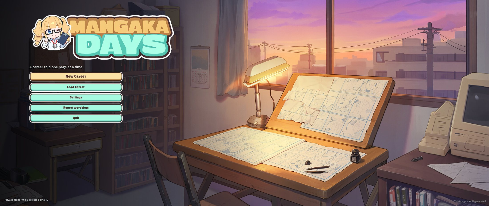
      <figcaption>Title screen, in-game capture at 2560 x 1080</figcaption>
    </figure>
    <dl class="facts">
      <div><dt>Genre</dt><dd>Career and studio management sim</dd></div>
      <div><dt>Setting</dt><dd>Greater Tokyo, from spring 1996</dd></div>
      <div><dt>Engine</dt><dd>Godot 4.7 with C#</dd></div>
      <div><dt>Platform</dt><dd>Windows on Steam, Steam Deck targeted</dd></div>
      <div><dt>Launch</dt><dd>Early Access, US$9.99, English</dd></div>
      <div><dt>Status</dt><dd>Private alpha 12, Tier 1 complete</dd></div>
    </dl>
  </div>
</section>

<main>

<!-- ================= VISION ================= -->
<section class="chapter" id="vision">
  <div class="wrap ch-grid">
    <div class="spine"><div class="jp" lang="ja">構想<small lang="en">Vision</small></div></div>
    <div>
      <p class="eyebrow">The pitch</p>
      <h2>Software Inc., but for manga.</h2>
      <p class="intro">Mangaka Days sits between <b>Football Manager</b> and <b>Kairosoft</b>: decisions with real numbers behind them, presented through a tiny chibi world you want to keep watching. You direct the career of a prodigy mangaka, <b>Aki</b> by default, from a one-shot drawn at home to a serialized hit, a studio of assistants and an anime deal. The career follows the creator, not the company: change employers, found a studio or start again from home. Cancellation is a setback, never a game over, and the game never ends.</p>

      <div class="pillars">
        <div class="pillar"><div class="k" lang="ja">決断</div><h3>Decisions with weight</h3><p>What to draw, where to pitch, when to hire. Every choice shows its cost, its odds and what happens next.</p></div>
        <div class="pillar"><div class="k" lang="ja">愛嬌</div><h3>Charm you can watch</h3><p>An isometric 3D home and studio with chibi staff, family routines and light that follows the day.</p></div>
        <div class="pillar"><div class="k" lang="ja">東京</div><h3>Grounded in real Tokyo</h3><p>1996 geography, rents, train fares and industry practice from Japanese sources, balanced to stay approachable.</p></div>
        <div class="pillar"><div class="k" lang="ja">明快</div><h3>Always know what is next</h3><p>Clear progress, actionable notifications, and a companion who guides without ever playing for you.</p></div>
      </div>

      <div class="cols block">
        <div>
          <h4>Who it is for</h4>
          <ul class="plain">
            <li><b>Management and cosy-sim players</b> who enjoy watching a small operation grow into a big one.</li>
            <li><b>Manga readers</b> curious about how chapters, surveys and cancellations really work.</li>
            <li><b>Steam and Steam Deck</b> players with 20 minutes or an evening to spare.</li>
          </ul>
        </div>
        <div>
          <h4>The promise in one line</h4>
          <p class="pull">Your first sale in 20 minutes. Your first studio in a few evenings. Your legacy over decades.</p>
        </div>
      </div>

      <div class="block logo-row">
        <div class="logo-plate"></div>
        <div>
          <h4>The name</h4>
          <p class="small"><b>Mangaka Days</b> replaced the working title Mangaka Studio on 28 September 2026. The tagline on the title screen reads "A career told one page at a time." The logo, with Helper-Chan winking from its corner, sets the colours of the whole interface.</p>
          <p class="note">Logo and title art are AI-generated with NovelAI V5. Its terms allow store and title-screen use with Steam's AI disclosure. A commissioned designer brief covers the final logo, key art and Steam capsules.</p>
        </div>
      </div>
    </div>
  </div>
</section>

<!-- ================= HELPER-CHAN ================= -->
<section class="chapter" id="helper">
  <div class="wrap ch-grid">
    <div class="spine"><div class="jp" lang="ja">相棒<small lang="en">Companion</small></div></div>
    <div>
      <p class="eyebrow">Mascot, guide and first reader</p>
      <h2>Helper-Chan never leaves your side.</h2>
      <div class="helper-top">
        <div>
          <p class="intro">A loyal assistant with enormous blonde drill twintails, glasses, a red lanyard and a clipboard she never puts down. She is the creator's number one fan. She teaches, notifies and occasionally steps into the story, and she follows every career move for free.</p>
          <p class="small">Her twintails are her silhouette, so on the 3D model they stay deliberately wider than anyone else's. In store art she always appears in her adult, fully clothed reference design.</p>
          <div class="rules">
            <div><b>No wage</b><span>Never on payroll or headcount</span></div>
            <div><b>No bonus</b><span>Adds nothing to production</span></div>
            <div><b>Own desk</b><span>Across the studio island from yours</span></div>
            <div><b>Always stays</b><span>Choices shape memories, not loyalty</span></div>
          </div>
        </div>
        <div class="tombo">
          <div class="faces">
            <figure><figcaption>Neutral</figcaption></figure>
            <figure><figcaption>Happy</figcaption></figure>
            <figure><figcaption>Concerned</figcaption></figure>
            <figure><figcaption>Determined</figcaption></figure>
          </div>
          <p class="cap">Approved portrait set. Routine tips use a compact card; important moments use the large panel.</p>
        </div>
      </div>

      <div class="block phone-row">
        <div class="phs" aria-hidden="true">
          <div class="brand">PHS</div>
          <div class="lcd">
            <div class="hd"><span>Helper-Chan</span><span>96/04/08 18:02</span></div>
            First copies sold! Two readers already asked about a sequel. Want to turn it into a series? I can show you where.
          </div>
          <div class="keys"><i></i><i></i><i></i><i></i><i></i><i></i><i></i><i></i><i></i></div>
        </div>
        <div>
          <h3>Guidance arrives as texts on her phone</h3>
          <p class="small">Until the end of 2009 the thread sits on a green-screen PHS handset with a stub antenna. From 2010 it becomes smartphone chat bubbles, and the history carries over. Texts stay under 140 characters. The "Show me" reply highlights the right control but never spends money or moves time. Hide guidance and the phone folds to an icon with an unread count. Selling is taught as it happens: the first copy sold arrives as a text, a gold "First copy sold!" bubble and a pulsing Sold count in the header.</p>
          <p class="note">Mock-up with example text. Period note: DDI Pocket launched PHS text mail on 20 November 1996, so texts in April 1996 are an accepted anachronism.</p>
        </div>
      </div>

      <div class="panels eq block">
        <figure class="panel">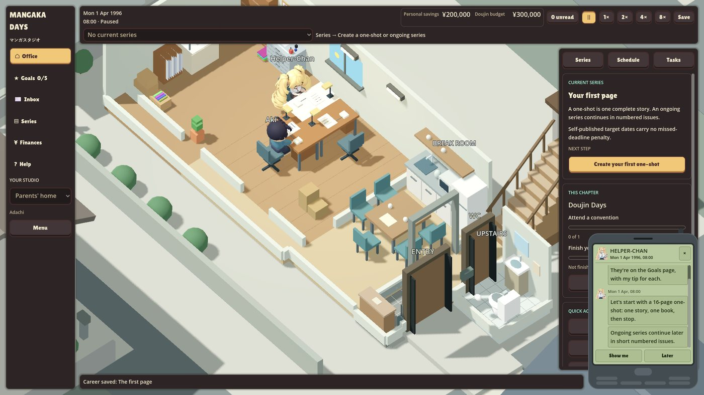</figure>
        <figure class="panel">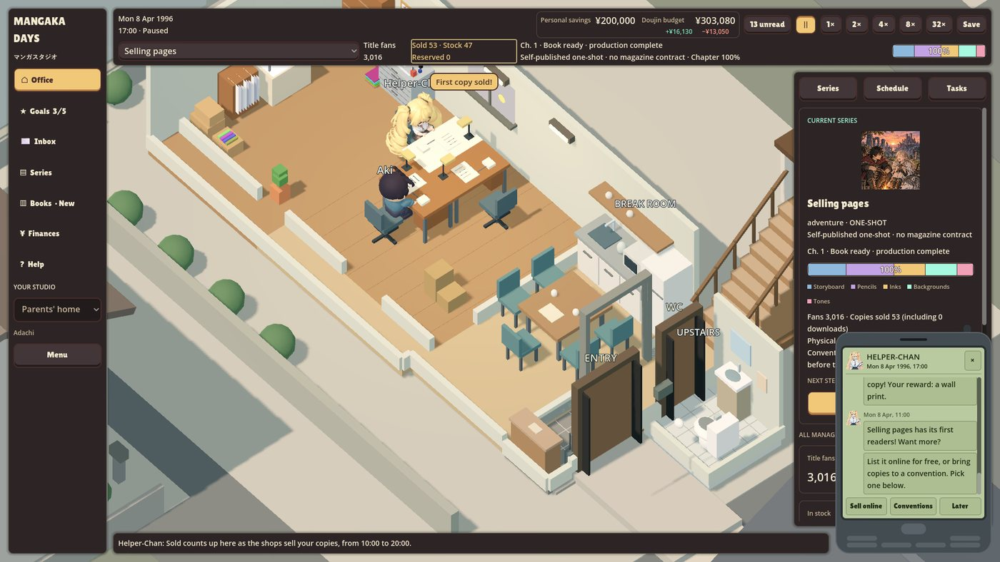</figure>
      </div>
      <p class="cap">Left: day one at the desk island, captured just before the quick start cut her first texts to one. Right: the first sale, with the next step as reply buttons.</p>

      <div class="block">
        <h4>Optional story arc: "The First Reader"</h4>
        <ol class="arc">
          <li><b>A place beside yours</b><span>Her desk arrives in the workroom.</span></li>
          <li><b>The first page worth keeping</b><span>She files the first finished page.</span></li>
          <li><b>Your first reader</b><span>She reads the work before anyone else.</span></li>
          <li><b>Same clipboard, different day</b><span>After a move or a setback.</span></li>
          <li><b>An archive of ordinary days</b><span>The clipboard has become a history.</span></li>
          <li><b>The first reader, still</b><span>Years later, she is still first in line.</span></li>
        </ol>
        <p class="small" style="margin-top:14px">Each scene offers two choices and can be skipped, deferred or replayed from the journal. At most one optional scene a day, at least a week between arc scenes, and everyday moments such as "Tea beside the draft" on a two-week cooldown.</p>
      </div>

      <div class="panels two block">
        <figure class="panel">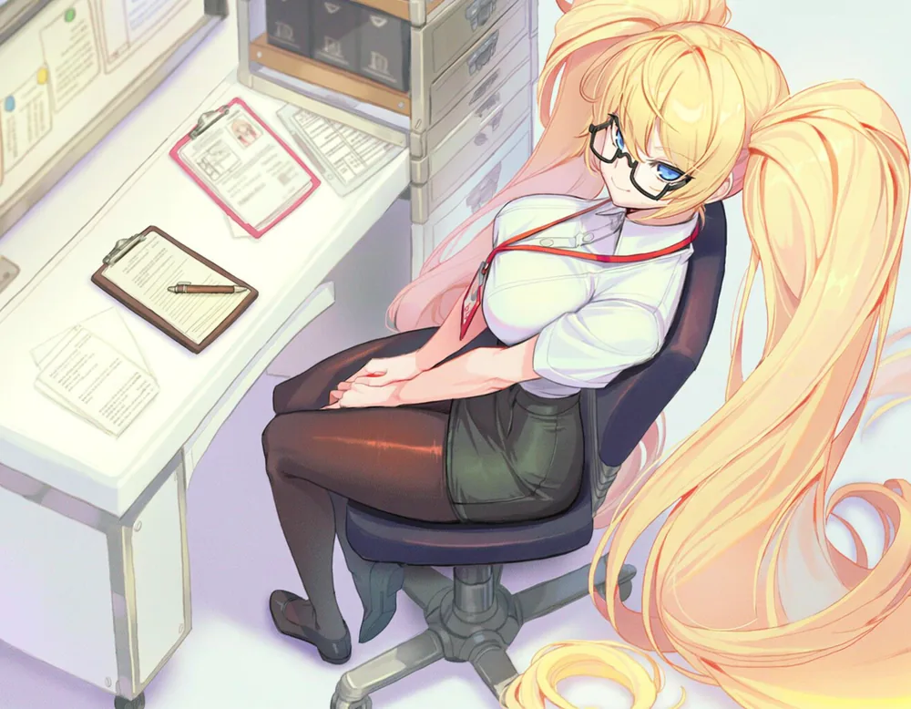</figure>
        <figure class="panel">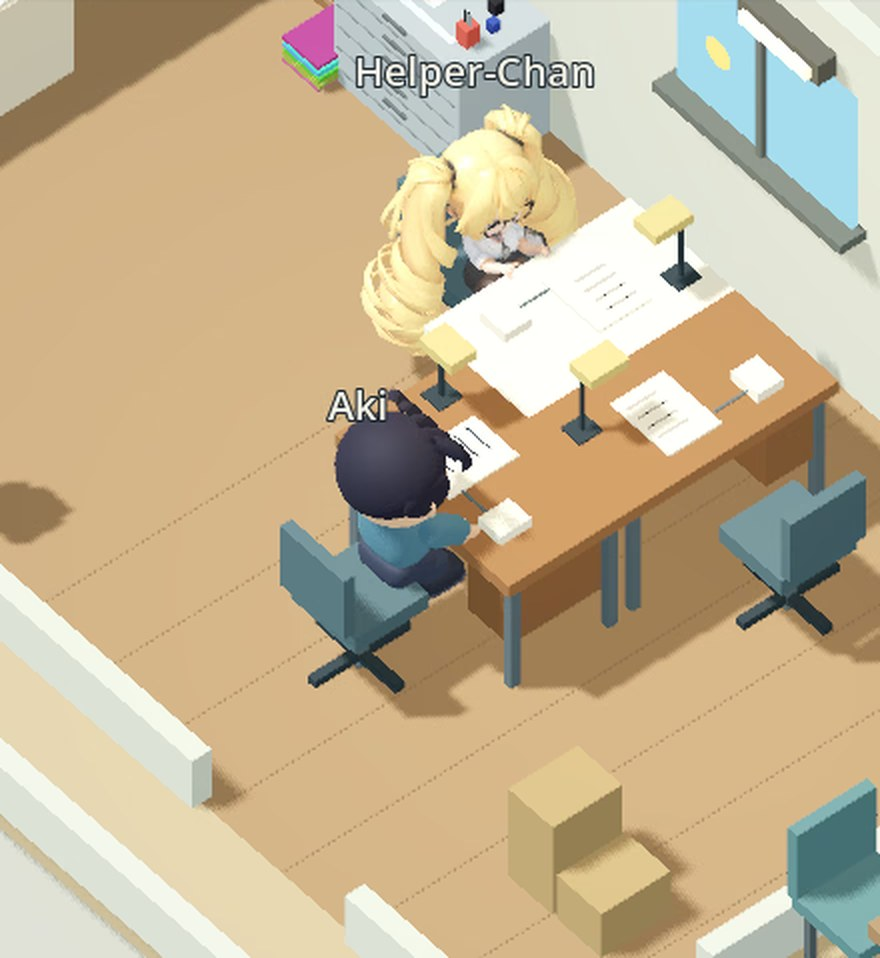</figure>
      </div>
      <p class="cap">"A moment at her desk" story illustration, and her rigged chibi model at the desk island with Aki.</p>
    </div>
  </div>
</section>

<!-- ================= JOURNEY ================= -->
<section class="chapter" id="journey">
  <div class="wrap ch-grid">
    <div class="spine"><div class="jp" lang="ja">道のり<small lang="en">Journey</small></div></div>
    <div>
      <p class="eyebrow">The core career path</p>
      <h2>From the kitchen table to the reader survey.</h2>
      <p class="intro">One continuous path, taught step by step, runs from a blank career through a first hire and a first setback. Contests and employment sit beside it as side routes. Dates come from a guided playtest career on the Standard preset; real times are tester A's first career on alpha.12.</p>

      <ol class="journey">
        <li><h3>Create your mangaka</h3><p>A name, Randomise look and Begin career, with the look and rules under Customise. You start at home in a random outer ward such as Nerima or Adachi, rent free, with every production skill at 95. Only the screens a doujin needs are open.</p><div class="when"><b>Day 1</b>Mon 1 April 1996, 08:00</div></li>
        <li><h3>Draw a one-shot doujin</h3><p>Helper-Chan suggests a 16-page standalone story. Work it through Name, Pencils, Inks, Backgrounds and Tones while sparkles fly from your desk to the progress bar.</p><div class="when"><b>6 April</b>Books opens</div></li>
        <li><h3>Print a batch</h3><p>Compare a copy shop, a local printer or a bulk printer, then order what the doujin budget can bear.</p><div class="when"><b>Day 6 to 7</b>Quote, then order</div></li>
        <li class="gold"><h3>Make the first sale</h3><p>Through a free online listing or a convention table. Copies sell through shop hours, so the first one shows up while you watch. 32x and Publishing open here.</p><div class="when"><b>8 April</b>Tester A: 17 minutes</div></li>
        <li><h3>Turn it into a series</h3><p>Numbered issues build a readership and are required before a magazine will look at you.</p><div class="when"><b>Week 2</b>Series created</div></li>
        <li><h3>Pitch to a magazine</h3><p>The Publishing page shows your odds at each magazine. Helper-Chan warns that a first rejection is normal and names the weakest factor if it comes.</p><div class="when"><b>Week 2</b>About two weeks to an answer</div></li>
        <li class="gold"><h3>Win a serialization</h3><p>Accept the offer before it expires. The debut lands four issues later, so you build a buffer of ready chapters while you wait. Industry opens.</p><div class="when"><b>2 May</b>Tester A: 41 minutes</div></li>
        <li class="gold"><h3>Hire the first assistant</h3><p>Runway is shown before you commit, with a confirmation if cash covers less than three months. The new assistant takes Backgrounds and Tones by default, and Staff and Studios open.</p><div class="when"><b>22 August</b>Tester A: 2 h 25 min</div></li>
        <li><h3>Meet real deadlines</h3><p>Chapters now close with the magazine at 18:00. The reader survey ranks you every issue, and weak runs bring a warning, then a risk of cancellation.</p><div class="when"><b>Debut</b>Four issues after the offer</div></li>
        <li><h3>Recover from a setback</h3><p>A rejection, a warning or a cancellation. Helper-Chan names the rank, the safe line, the issues left and the weakest part, and the career carries on.</p><div class="when"><b>Year 2</b>Tester A: 3 h 22 min</div></li>
      </ol>
      <p class="small">Beyond the first hire: contests and awards, anime and merchandise licensing, incorporation, bigger premises, branches, rival studios poaching your staff, and the long climb toward an iconic series.</p>

      <div class="block">
        <h4>Time and pacing</h4>
        <p class="small">One simulation tick is one in-game hour, played in real time. The working day runs 08:00 to 18:00, then a lights-out sequence carries the night to dawn.</p>
        <div class="speed">
          <div><b>1x</b><span>36 s per hour</span></div>
          <div><b>2x</b><span>Hyperlapse trails begin</span></div>
          <div><b>4x</b><span>Busy stretches</span></div>
          <div><b>8x</b><span>45 s per working day</span></div>
          <div><b>32x</b><span>11 s per routine day, after the first sale</span></div>
          <div><b>Stops</b><span>Offers, warnings, paydays, new texts</span></div>
        </div>
        <p class="note" style="margin-top:10px">32x runs quiet days without the recap and drops back to your last speed when something needs you. Tester A spent 39% of a 5.5 hour session at 32x and averaged about 2.6 real hours per in-game year, a third of it paused. On days with no work, the night is skipped too.</p>
      </div>
    </div>
  </div>
</section>

<!-- ================= GOALS ================= -->
<section class="chapter" id="goals">
  <div class="wrap ch-grid">
    <div class="spine"><div class="jp" lang="ja">目標<small lang="en">Goals</small></div></div>
    <div>
      <p class="eyebrow">Career goals and a game that opens up</p>
      <h2>Five chapters, one page at a time.</h2>
      <p class="intro">An open-ended career still needs a next step you can see. A goals board splits the career into five chapters with 27 goals, progress bars and a <b>How?</b> tip on each. Rewards are one-off: cash, fans, decorations that cannot be bought, unlocks and Helper-Chan scenes.</p>

      <div class="goalch">
        <div><span class="no">Chapter 1</span><b>Doujin Days</b><span>First doujin, first copy sold, a convention, 100 fans, ¥50,000 earned.</span><em>Trophy shelf, free table</em></div>
        <div><span class="no">Chapter 2</span><b>Rookie</b><span>Pitch or enter a contest, an editor's verdict, a serialization or placing, 1,000 fans.</span><em>Pro desk, +10% on the next pitch</em></div>
        <div><span class="no">Chapter 3</span><b>Serialized</b><span>Ten chapters, the top ten, a first volume, a first hire, 10,000 readers.</span><em>¥100,000, award plaque</em></div>
        <div><span class="no">Chapter 4</span><b>Studio Head</b><span>Move out, three staff, incorporate, two series, an award shortlist.</span><em>¥300,000, display cabinet</em></div>
        <div><span class="no">Chapter 5</span><b>Legend</b><span>An anime, merchandise, a million readers, an iconic series, a sustainable year.</span><em>A closing scene</em></div>
      </div>
      <p class="cap">Three Mastery goals sit beside the chapters. A finished goal keeps 32x running; a finished chapter stops for a celebration with the good-news music.</p>

      <div class="cols block">
        <div>
          <figure class="panel">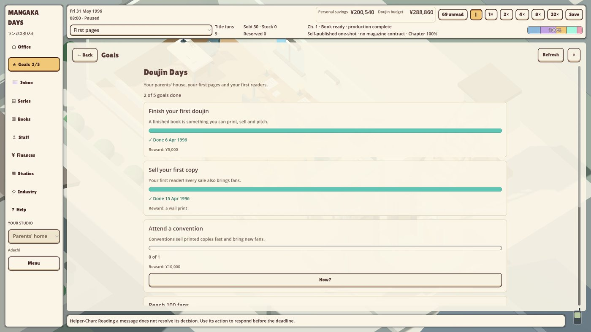</figure>
          <p class="cap">The Goals page, light theme. The rail badge reads "Goals 2/5".</p>
        </div>
        <div>
          <h4>Screens open when they are needed</h4>
          <p class="small">A new career shows only Office, Goals, Inbox, Series, Finances and Help, with speeds up to 8x. Each other part opens at its own moment with a "New" tag and one line from Helper-Chan, and never closes again.</p>
          <div class="tbl"><table>
            <thead><tr><th>Opens</th><th>When</th></tr></thead>
            <tbody>
              <tr><td>Books</td><td>First doujin finished</td></tr>
              <tr><td>Publishing and 32x</td><td>First sale</td></tr>
              <tr><td>Industry</td><td>A serialization or contest result</td></tr>
              <tr><td>Contests</td><td>The Rookie chapter</td></tr>
              <tr><td>Staff and Studios</td><td>First hire</td></tr>
            </tbody>
          </table></div>
          <p class="note" style="margin-top:10px">Experienced players can tick "show every screen" on the New Career page or in Settings. Rival job offers to Aki wait until Industry opens.</p>
        </div>
      </div>
    </div>
  </div>
</section>

<!-- ================= PRODUCTION ================= -->
<section class="chapter" id="production">
  <div class="wrap ch-grid">
    <div class="spine"><div class="jp" lang="ja">制作<small lang="en">Production</small></div></div>
    <div>
      <p class="eyebrow">The staged chapter pipeline</p>
      <h2>Five stages. One deadline. Never quite enough hours.</h2>
      <p class="intro">Every chapter moves through the same five stages a real manga studio uses. An auto-planner assigns the work, and you can pin, reorder or skip stages, set overtime, change cadence and adjust page counts.</p>

      <div class="pipe">
        <div class="stage" style="flex:1.2"><div class="jpn" lang="ja">ネーム</div><div class="en">Name</div><div class="hrs">1.2 h per page</div><div class="q" style="transform:scaleX(1)"></div></div>
        <div class="stage" style="flex:1.5"><div class="jpn" lang="ja">下描き</div><div class="en">Pencils</div><div class="hrs">1.5 h per page</div><div class="q" style="transform:scaleX(.857)"></div></div>
        <div class="stage" style="flex:1.0"><div class="jpn" lang="ja">ペン入れ</div><div class="en">Inks</div><div class="hrs">1.0 h per page</div><div class="q" style="transform:scaleX(.43)"></div></div>
        <div class="stage" style="flex:1.0"><div class="jpn" lang="ja">背景</div><div class="en">Backgrounds</div><div class="hrs">1.0 h per page</div><div class="q" style="transform:scaleX(.286)"></div></div>
        <div class="stage" style="flex:.72"><div class="jpn" lang="ja">トーン</div><div class="en">Tones</div><div class="hrs">0.5 h per page</div><div class="q" style="transform:scaleX(.286)"></div></div>
      </div>
      <p class="cap">Box width shows base hours per page. The red rule shows each stage's share of chapter quality: Name 35%, Pencils 30%, Inks 15%, Backgrounds and Tones 10% each.</p>

      <div class="math">
        <div><b>98.8 h</b><span>of base work in a 19-page weekly chapter</span></div>
        <div><b>~52 h</b><span>for Aki alone, working 1.9 times faster at skill 95</span></div>
        <div><b>60 h</b><span>in a six-day, ten-hour week. It fits, but only just, and the editor's review leaves no room for a buffer. An assistant on Backgrounds and Tones frees about 15 hours a week.</span></div>
      </div>

      <div class="cols block">
        <div>
          <h4>The editor's gate</h4>
          <p class="small">Serialized chapters stop after Name for editor review: 24, 36 or 48 hours depending on the magazine's tier. Pencils wait until it clears. A redo costs a little reputation, and the third submission is always approved, so review is pressure rather than a wall.</p>
        </div>
        <div>
          <h4>Quality and shortcuts</h4>
          <p class="small">A clean solo chapter at skill 95 scores about 96. Skipping Tones saves time and drops it to 86. Overtime rushes the work and trims quality, never below 70% of what it would have been. Skills grow with practice and mentoring.</p>
        </div>
      </div>

      <div class="block">
        <h4>Twelve genres, each with its own history</h4>
        <p class="small">Genre demand follows keyframes from 1996 to 2020, with random booms and your own influence on top. Slice of life climbs from a niche to a staple by 2010; fantasy rises steadily; sci-fi cools. Every genre has original cover art for the showcase screens.</p>
        <div class="covers">
          <figure>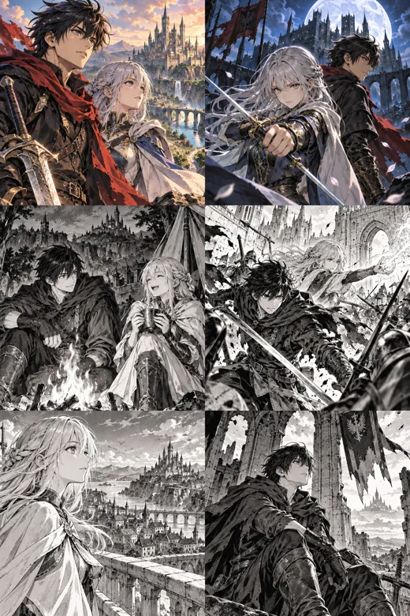<figcaption>Action</figcaption></figure>
          <figure><figcaption>Romance</figcaption></figure>
          <figure><figcaption>Sports</figcaption></figure>
          <figure><figcaption>Horror</figcaption></figure>
          <figure>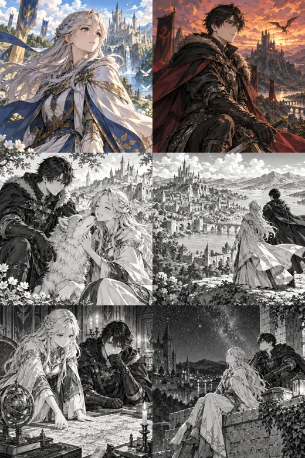<figcaption>Fantasy</figcaption></figure>
          <figure><figcaption>Slice of life</figcaption></figure>
          <figure><figcaption>Mystery</figcaption></figure>
          <figure><figcaption>Comedy</figcaption></figure>
          <figure><figcaption>Sci-fi</figcaption></figure>
          <figure><figcaption>Drama</figcaption></figure>
          <figure>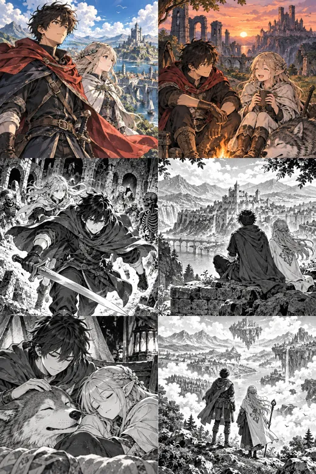<figcaption>Adventure</figcaption></figure>
          <figure>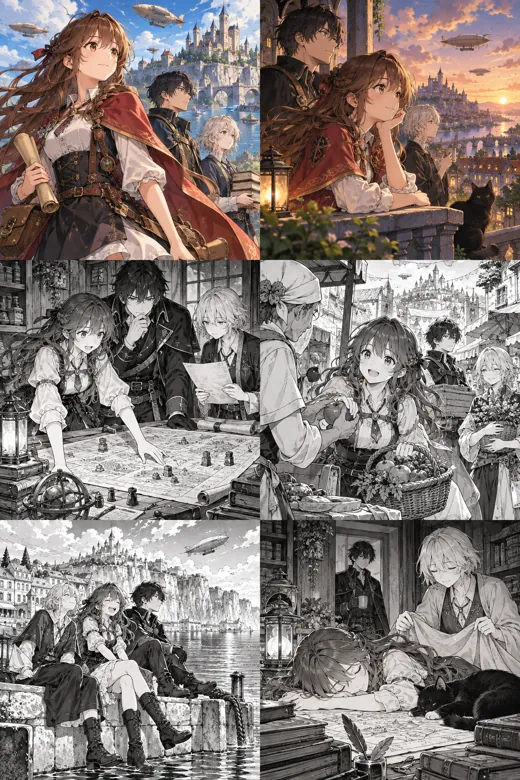<figcaption>Other</figcaption></figure>
        </div>
      </div>

      <div class="panels eq block">
        <figure class="panel">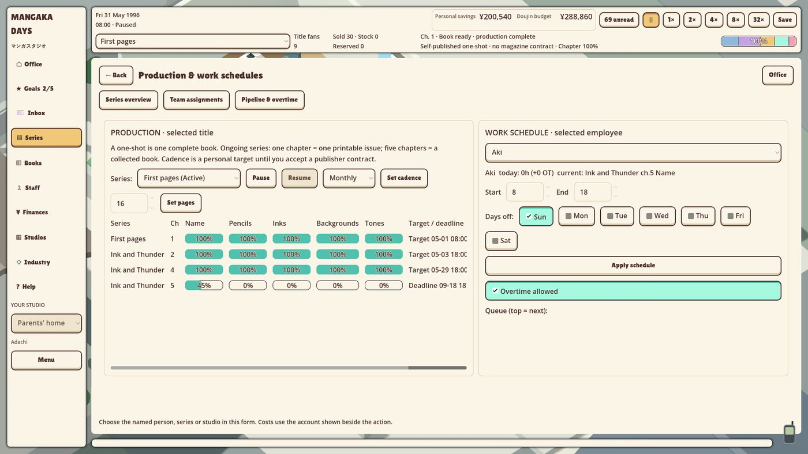</figure>
        <figure class="panel">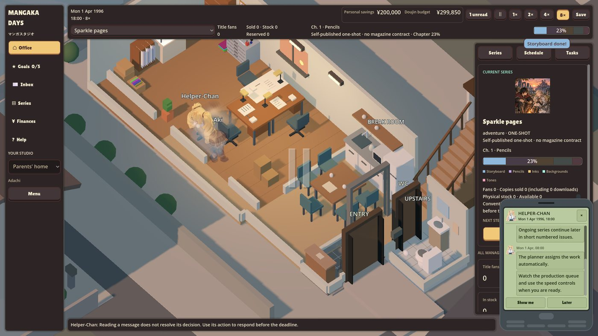</figure>
      </div>
      <p class="cap">Left: Production and work schedules, light theme. Right: work you can see. Sparkles fly from a seated worker to the header bar, and a bubble marks each finished stage. Reduced motion turns both off.</p>
    </div>
  </div>
</section>

<!-- ================= PUBLISHING ================= -->
<section class="chapter" id="publishing">
  <div class="wrap ch-grid">
    <div class="spine"><div class="jp" lang="ja">出版<small lang="en">Publishing</small></div></div>
    <div>
      <p class="eyebrow">Two ways to reach readers</p>
      <h2>Self-publish first. Then pitch for the magazines.</h2>
      <p class="intro">Doujin work is yours: no deadlines, no penalties, your own prices. Magazine work pays page fees and royalties but brings the reader survey, the editor and the risk of cancellation.</p>

      <div class="cols block">
        <div>
          <h4>Doujin: print, list, sell</h4>
          <div class="tbl"><table>
            <thead><tr><th>Printer</th><th>Run</th><th>Delivery</th></tr></thead>
            <tbody>
              <tr><td>Copy shop</td><td class="n">1 to 100</td><td class="n">1 day</td></tr>
              <tr><td>Local printer</td><td class="n">50 to 1,000</td><td class="n">4 days</td></tr>
              <tr><td>Bulk printer</td><td class="n">300 to 5,000</td><td class="n">7 days</td></tr>
            </tbody>
          </table></div>
          <p class="small" style="margin-top:16px">Online listings are free and the shop takes 30%. Copies sell through shop hours, 10:00 to 20:00 every day, so sales arrive as they happen, and internet reach grows year by year from almost nothing in 1996. Conventions come in three sizes: a free local event, a regional one in Toshima and the major summer and winter events at Ariake, with booths booked up to 28 days ahead.</p>
        </div>
        <div>
          <figure class="panel">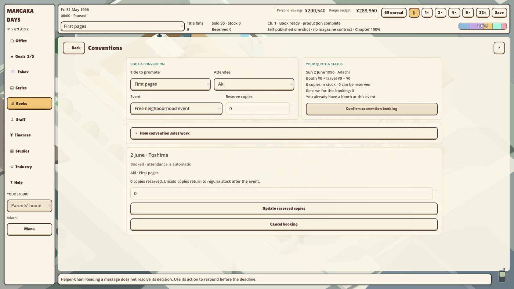</figure>
          <p class="cap">Conventions: book a table, reserve copies, see the fare.</p>
        </div>
      </div>

      <div class="block">
        <h4>Six magazines from three publishers</h4>
        <div class="tbl"><table>
          <thead><tr><th>Magazine</th><th>Audience</th><th>Tier</th><th>Cadence</th><th>Page fee (1996)</th></tr></thead>
          <tbody>
            <tr><td>Weekly Tokiwa Jump</td><td>Shonen</td><td><span class="tier t1">Tier 1</span></td><td>Weekly</td><td class="n">¥9,000 to ¥20,000</td></tr>
            <tr><td>Weekly Kaidan Magazine</td><td>Shonen</td><td><span class="tier t1">Tier 1</span></td><td>Weekly</td><td class="n">¥9,000 to ¥18,000</td></tr>
            <tr><td>Weekly Hoshigaku Sunday</td><td>Shonen</td><td><span class="tier t2">Tier 2</span></td><td>Weekly</td><td class="n">¥8,000 to ¥15,000</td></tr>
            <tr><td>Tokiwa Square</td><td>Shonen</td><td><span class="tier t2">Tier 2</span></td><td>Biweekly</td><td class="n">¥8,000 to ¥14,000</td></tr>
            <tr><td>Monthly Kaidan Afternoon</td><td>Seinen</td><td><span class="tier t3">Tier 3</span></td><td>Monthly</td><td class="n">¥7,000 to ¥12,000</td></tr>
            <tr><td>Monthly Hoshigaku Flowers</td><td>Shojo</td><td><span class="tier t3">Tier 3</span></td><td>Monthly</td><td class="n">¥6,000 to ¥11,000</td></tr>
          </tbody>
        </table></div>
      </div>

      <div class="cols block">
        <div>
          <h4>Pitching</h4>
          <div class="formula">chance = base × quality × reputation × genre fit × trend<small>Base odds are 12%, 24% and 40% for tiers 1, 2 and 3, held between 2% and 95%. A contest win adds 10 points for a year, and finishing the Rookie chapter adds 10 points to the next pitch.</small></div>
          <p class="small">A rejection names the weakest factor and closes that magazine to you for 26 weeks, and the Pitch button says so until then. An offer debuts at the fourth issue close, which is why the buffer matters.</p>
        </div>
        <div>
          <h4>The reader survey</h4>
          <div class="formula">rank score = 60% readership + 40% craft<small>Adjusted by genre fit, trend and crowding from same-genre series.</small></div>
          <p class="small">New series are protected for six chapters. After that, weeks below the line bring a warning, then a cancellation roll. Long-running, popular and culturally important series earn more protection, and a truly iconic one can never be cancelled.</p>
        </div>
      </div>

      <div class="cols block">
        <div>
          <figure class="panel">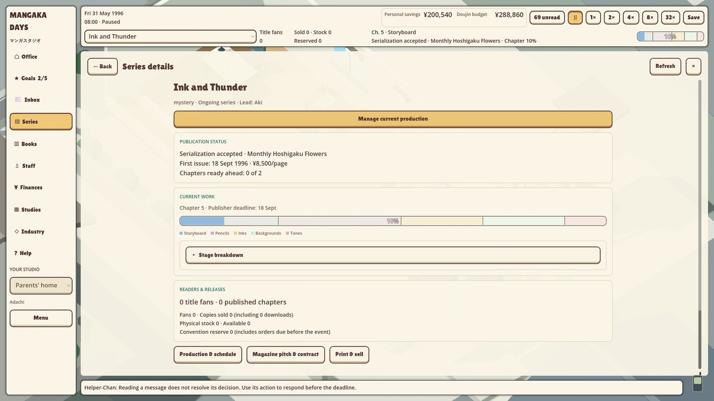</figure>
          <p class="cap">"Ink and Thunder" accepted at Monthly Hoshigaku Flowers: first issue 18 September 1996, ¥8,500 a page, chapters ready 0 of 2.</p>
        </div>
        <div>
          <h4>Collected volumes</h4>
          <p class="small">Chapters gather into tankobon volumes six weeks after completion. Royalties follow the print run, as they do in Japan: the first 10,000 copies are paid on release, then each reprint milestone pays again. Digital and overseas editions open up as the timeline reaches them.</p>
          <h4 style="margin-top:22px">Endings</h4>
          <p class="small">Cancellation closes that magazine for a year and dents your track record, but a final volume still comes out and you can pitch again elsewhere. Ending a series properly after twelve or more chapters improves your standing.</p>
        </div>
      </div>
    </div>
  </div>
</section>

<!-- ================= MONEY ================= -->
<section class="chapter" id="money">
  <div class="wrap ch-grid">
    <div class="spine"><div class="jp" lang="ja">資金<small lang="en">Money</small></div></div>
    <div>
      <p class="eyebrow">Separate pockets, clear consequences</p>
      <h2>Your savings are not the studio's money.</h2>
      <p class="intro">Personal savings and the doujin budget are always kept apart. Moving money between them is a deliberate act, and incorporation turns the budget into a proper company account. Figures below are the Standard preset.</p>

      <div class="pockets">
        <div class="pocket"><span class="tag">Personal</span><div class="amt">¥200,000</div><h3>Savings</h3><p>Your own money. Topped up by a part-time job (afternoon or evening shifts from ¥700 an hour), contest prizes and wages when employed. It can rescue a missed payday.</p></div>
        <div class="pocket biz"><span class="tag">Business</span><div class="amt">¥300,000</div><h3>Doujin budget</h3><p>Pays for printing, conventions and internet, and receives sales, page fees and royalties. Later it carries salaries, rent and bills.</p></div>
        <div class="pocket"><span class="tag">Company</span><div class="amt">¥3.2M</div><h3>Incorporation</h3><p>¥200,000 setup plus ¥3,000,000 capital, until the capital minimum is abolished in May 2006. Unlocks business credit at 8%.</p></div>
      </div>

      <div class="callout">
        <span class="hanko" lang="ja">安心</span>
        <p><b>First-hire safety.</b> An assistant costs about ¥144,000 to ¥175,000 a month. Before you hire, the game shows runway: business cash plus confirmed page fees for the next 90 days, divided by monthly costs. Under three months, the line turns amber and asks you to confirm. It warns, it never blocks.</p>
      </div>

      <div class="cols block">
        <div>
          <h4>What things cost</h4>
          <div class="tbl"><table>
            <tbody>
              <tr><td>Parents' house</td><td class="n">¥0 rent</td></tr>
              <tr><td>Four-desk studio in Nerima</td><td class="n">¥60,000 / month</td></tr>
              <tr><td>32-desk studio in Minato</td><td class="n">¥800,000 / month</td></tr>
              <tr><td>Internet</td><td class="n">¥3,000 / month</td></tr>
              <tr><td>Recruitment search</td><td class="n">¥20,000</td></tr>
              <tr><td>Company administration</td><td class="n">¥20,000 / month</td></tr>
            </tbody>
          </table></div>
          <p class="note" style="margin-top:10px">Prices follow real Japanese consumer prices from 1996, then rise 2% a year after 2026.</p>
        </div>
        <div>
          <h4>Balance target, measured</h4>
          <p class="small">With sensible play the first three years stay solvent, a setback is recoverable, and money is neither trivially abundant nor a dead end.</p>
          <div class="tbl"><table>
            <thead><tr><th>Evidence</th><th>Result</th></tr></thead>
            <tbody>
              <tr><td>Six guided careers to April 1999, personal savings</td><td class="n">¥0.55M to ¥10.3M</td></tr>
              <tr><td>Careers that went bankrupt</td><td class="n">None</td></tr>
              <tr><td>Tester A after a cancellation</td><td class="n">10 more months</td></tr>
              <tr><td>Streaming sales vs weekly lump</td><td class="n">−1.6% to +2.8%</td></tr>
            </tbody>
          </table></div>
          <p class="note" style="margin-top:10px">The richest career rode a hit series. Balance across ten in-game years is Tier 2 work.</p>
        </div>
      </div>
    </div>
  </div>
</section>

<!-- ================= STUDIO ================= -->
<section class="chapter" id="studio">
  <div class="wrap ch-grid">
    <div class="spine"><div class="jp" lang="ja">仕事場<small lang="en">Studio</small></div></div>
    <div>
      <p class="eyebrow">The 3D office and the people in it</p>
      <h2>From the spare room to a floor in Minato.</h2>
      <p class="intro">An orthographic, dollhouse-style 3D view with roofs lifted and front walls cut away. You can rotate, pan and zoom, and switch to furnishing mode to place desks on a 0.25 m grid. Everyone is a chibi about two and a half heads tall.</p>

      <div class="panels eq block">
        <figure class="panel">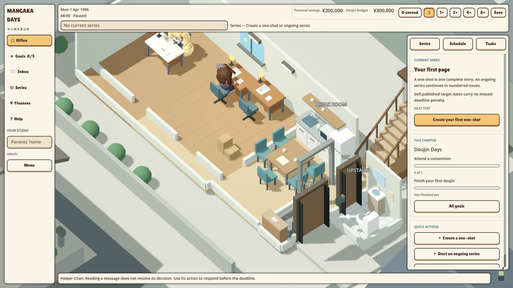</figure>
        <figure class="panel">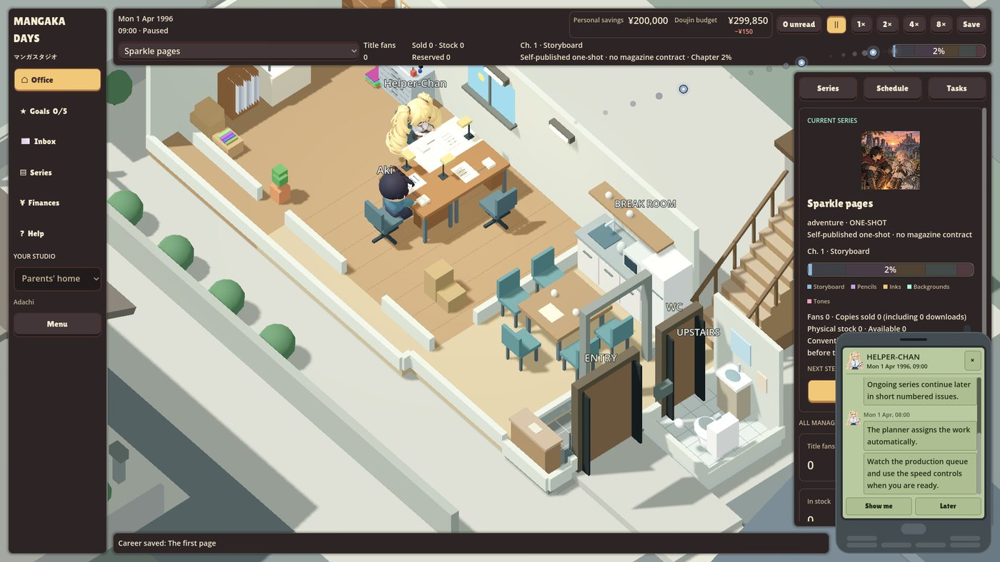</figure>
      </div>
      <p class="cap">The parents' house: Aki's desk heads a desk island, Helper-Chan's desk faces the spare one, and the old alcove is now a studio corner with a bookcase, plan chest, cork board, light table and screentone rack. Kitchen, genkan, WC and rear stairs lead to the family's upstairs.</p>

      <div class="cols block" style="align-items:center">
        <div>
          <h4>The family</h4>
          <p class="small">Mom and Dad live their own routines: they come down for meals, head out on errands and share breaks with you. They are pure atmosphere with no effect on the simulation, but they make the first months feel like home.</p>
        </div>
        <div style="display:flex;gap:10px;justify-content:center;background:radial-gradient(var(--tone) 1.2px,transparent 1.4px) 0 0/6px 6px,var(--paper-2);border:3px solid var(--rule);padding:14px 10px 0">
          
          
        </div>
      </div>

      <div class="panels eq block">
        <figure class="panel">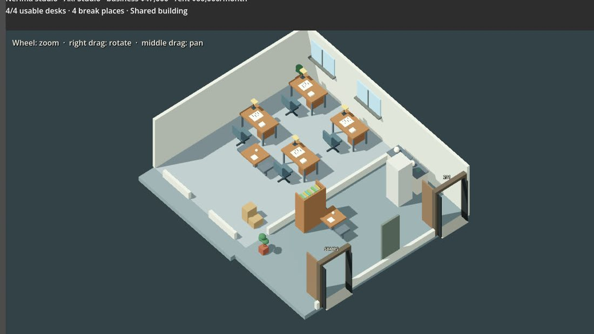</figure>
        <figure class="panel">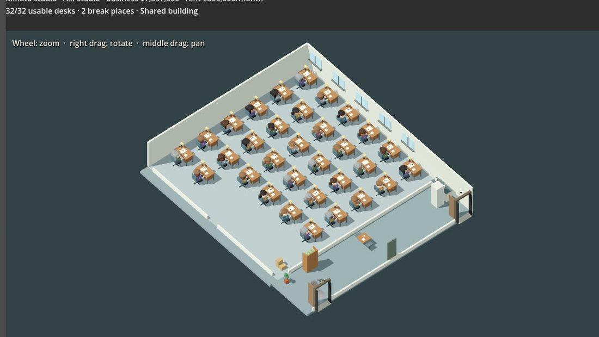</figure>
      </div>
      <p class="cap">Left: a four-desk first studio in Nerima. Right: a 32-desk operation in Minato. Captured from the studio preview in an earlier build.</p>

      <div class="block">
        <h4>Sixteen rentable premises across four tiers</h4>
        <div class="tbl"><table>
          <thead><tr><th>Tier</th><th>Desks</th><th>Wards and monthly rent</th></tr></thead>
          <tbody>
            <tr><td>Small</td><td class="n">4</td><td>Nerima ¥60k, Itabashi ¥70k, Adachi ¥80k, Edogawa ¥90k</td></tr>
            <tr><td>Growing</td><td class="n">8</td><td>Suginami ¥120k, Nakano ¥140k, Katsushika ¥160k, Ota ¥190k</td></tr>
            <tr><td>Established</td><td class="n">16</td><td>Toshima ¥250k, Bunkyo ¥290k, Sumida ¥330k, Koto ¥380k</td></tr>
            <tr><td>Large</td><td class="n">32</td><td>Shinjuku ¥500k, Chiyoda ¥600k, Shibuya ¥700k, Minato ¥800k</td></tr>
          </tbody>
        </table></div>
      </div>

      <div class="cols-3 block">
        <div>
          <h4>Hiring</h4>
          <p class="small">A pool of six candidates refreshes twice a month: juniors, generalists, specialists and, very rarely, a prodigy. Salary expectations rise with skill, and a paid search finds three more. A new hire needs a free desk with a reachable chair, and assistants take Backgrounds and Tones unless you change it.</p>
        </div>
        <div>
          <h4>Wellbeing</h4>
          <p class="small">Staff get hungry, thirsty and tired, take breaks, and slow down when they are running on empty. Unhappiness or unpaid wages lead to warnings and notice. Rival studios may try to poach your best people.</p>
        </div>
        <div>
          <h4>Growing</h4>
          <p class="small">Move up through the desk tiers, open branches, take a job with another studio as an employed lead, or go home and start again. Old businesses go dormant, never deleted.</p>
        </div>
      </div>
    </div>
  </div>
</section>

<!-- ================= ERA ================= -->
<section class="chapter" id="era">
  <div class="wrap ch-grid">
    <div class="spine"><div class="jp" lang="ja">時代<small lang="en">Era</small></div></div>
    <div>
      <p class="eyebrow">Historical timeline and rivals</p>
      <h2>Thirty years of manga history, then a future you write.</h2>
      <p class="intro">Researched industry history runs from 1996 to the end of 2025, with fictional analogues of real series launching on their real dates. From 2026 the game says so plainly and switches to a clearly labelled simulated future.</p>

      <div class="timeline">
        <div class="tl gold"><div class="d">1 Apr 1996</div><b>Career begins</b><span>Just before a golden decade for weekly shonen.</span></div>
        <div class="tl"><div class="d">3 to 4 Aug 1996</div><b>Summer mega-convention at Ariake</b><span>Modelled on the real event: 18,000 circles, 350,000 visitors.</span></div>
        <div class="tl"><div class="d">Jul 1997</div><b>"Two Piece" debuts</b><span>A rival pirate epic that never stops running.</span></div>
        <div class="tl"><div class="d">Aug 2001</div><b>"Blanch" debuts</b><span>Its anime follows in October 2004.</span></div>
        <div class="tl"><div class="d">May 2006</div><b>Company law changes</b><span>The ¥3M capital minimum disappears. Mobile manga services arrive.</span></div>
        <div class="tl"><div class="d">2010</div><b>Helper-Chan gets a smartphone</b><span>The PHS thread becomes chat bubbles.</span></div>
        <div class="tl"><div class="d">2012 to 2019</div><b>Digital goes global</b><span>Overseas digital, simultaneous release, domestic apps.</span></div>
        <div class="tl gold"><div class="d">1 Jan 2026</div><b>History ends</b><span>A labelled simulated future takes over.</span></div>
      </div>

      <div class="cols block">
        <div>
          <h4>Thirteen rival analogues</h4>
          <div class="chips">
            <span class="chip">Casebook Kento<small>1994</small></span>
            <span class="chip">Two Piece<small>1997</small></span>
            <span class="chip">Zodiac House<small>1998</small></span>
            <span class="chip">Naruka<small>1999</small></span>
            <span class="chip">Spirit Wanderer<small>1999</small></span>
            <span class="chip">Blanch<small>2001</small></span>
            <span class="chip">Hundred Verse Hearts<small>2007</small></span>
            <span class="chip">Beyond the Walls<small>2009</small></span>
            <span class="chip">High Serve!!<small>2012</small></span>
            <span class="chip">Hero Homeroom<small>2014</small></span>
            <span class="chip">Demon Lantern<small>2016</small></span>
            <span class="chip">Secret Household<small>2019</small></span>
            <span class="chip">After the Hero<small>2020</small></span>
          </div>
          <p class="small" style="margin-top:16px">They reach their real outcomes, but no rank is forced. A strong enough series can outrank any of them.</p>
        </div>
        <div>
          <h4>Tokyo, researched</h4>
          <ul class="plain">
            <li>All 23 wards plus Musashino, Mitaka, Kawasaki, Yokohama, Urawa and Chiba. Urawa, because Saitama City did not exist until 2001.</li>
            <li>Train fares from distance: free within 3 km, then ¥170, ¥210 and ¥250 steps in 1996 prices.</li>
            <li>Minimum wage by fiscal year, from ¥650 in 1995. Period office details such as steel desks and screentone sheets.</li>
          </ul>
        </div>
      </div>

      <div class="cols block">
        <div>
          <h4>Awards and adaptations</h4>
          <p class="small">Twice-yearly one-shot contests with written feedback, an annual award for published work, and anime and merchandise partners who negotiate shares, schedule production and sometimes catch up to the manga.</p>
        </div>
        <figure class="panel">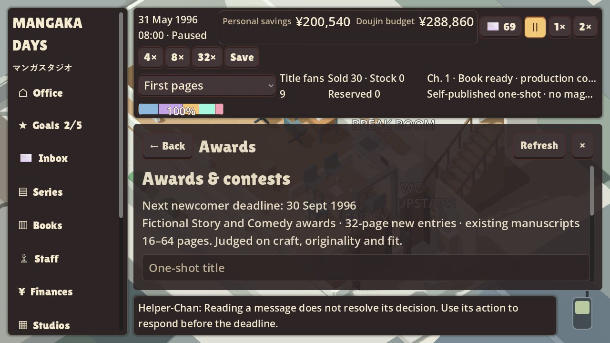<figcaption>Awards and contests at 1280 x 720, large interface size.</figcaption></figure>
      </div>
    </div>
  </div>
</section>

<!-- ================= SCREENS ================= -->
<section class="chapter" id="screens">
  <div class="wrap ch-grid">
    <div class="spine"><div class="jp" lang="ja">画面<small lang="en">Interface</small></div></div>
    <div>
      <p class="eyebrow">Management interface and accessibility</p>
      <h2>A desk that fits every screen.</h2>
      <p class="intro">The office fills the whole canvas. A persistent left rail opens floating panels for Goals, the Inbox, Series, Books, Staff, Finances, Studios and Industry. A two-row header always shows the date, speed, both money pockets and the selected series' progress, stock and reservations. A right click steps back to the office.</p>

      <figure class="panel block">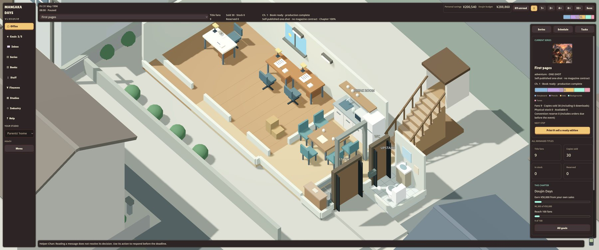</figure>
      <p class="cap">21:9 ultrawide in the Evening studio theme: wider screens show more office, never stretched panels.</p>

      <div class="cols block">
        <div>
          <figure class="panel">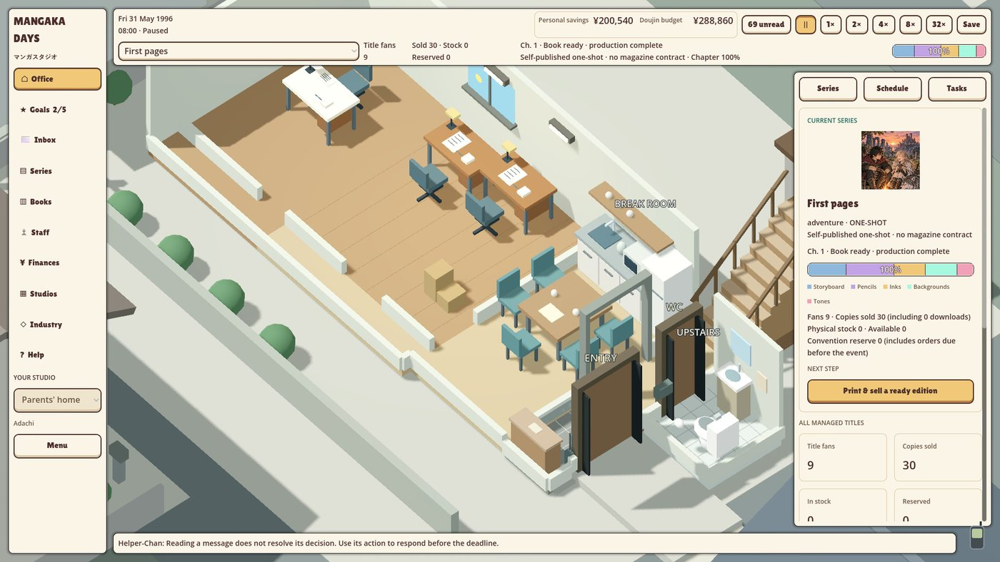</figure>
          <p class="cap">16:9 in the Manuscript paper theme.</p>
        </div>
        <div>
          <h4>Built in from the start</h4>
          <ul class="plain">
            <li><b>Two themes from the logo.</b> Evening studio, or Manuscript paper. Every text colour reaches 4.5:1 contrast.</li>
            <li><b>Interface size from 80% to 200%</b>. Automatic follows Windows scaling, capped so a 1280 x 720 layout still fits.</li>
            <li><b>Fullscreen or windowed</b>, switched with F11 or Alt+Enter.</li>
            <li><b>Status never relies on colour alone</b>, icons are always labelled, nothing essential hides behind hover.</li>
            <li><b>Disabled controls say why.</b> Visible focus and keyboard order throughout.</li>
            <li><b>Reduced motion</b> turns off fades, sparkles and bubbles; trails run Full, Reduced or Off.</li>
          </ul>
        </div>
      </div>

      <div class="cols block">
        <div>
          <h4>Logo slabs and two palettes</h4>
          <p class="small">Buttons are chunky slabs taken from the logo lettering: gold for the main action, mint for where you are, quiet slabs for everything else. Buttons and headings use Lilita One; body text and figures keep the reading font.</p>
          <div class="swatches">
            <div class="sw eve"><b>Evening studio</b><div class="dots"><i style="background:#221a1c"></i><i style="background:#2e2426"></i><i style="background:#f6ead2"></i><i style="background:#a8f8e0"></i><i style="background:#f0c878"></i></div><span>page #221a1c · text #f6ead2</span></div>
            <div class="sw ms"><b>Manuscript paper</b><div class="dots"><i style="background:#efe4cf"></i><i style="background:#fbf5e8"></i><i style="background:#4b2c2a"></i><i style="background:#226658"></i><i style="background:#f0c878"></i></div><span>page #efe4cf · text #4b2c2a</span></div>
          </div>
        </div>
        <div>
          <figure class="panel">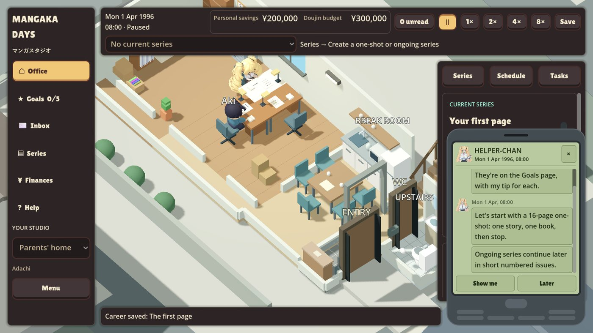</figure>
          <p class="cap">The same day-one screen with the interface at 150%. The 3D office keeps the window's real pixels.</p>
        </div>
      </div>

      <div class="block">
        <h4>From launch to the desk</h4>
        <p class="small">Every launch opens on a short, silent notice that some assets are AI-generated. The first launch then asks for just two things, a Master volume starting at zero and the interface size; music, effects and window options wait in Settings. The title screen offers Continue, New Career, Load Career, Settings, Report a problem and Quit over a slow zoom of the drafting-room art. In a career, the Menu button opens a small pause menu with Quit to title, and leaving a career or closing the window always makes a safety save first.</p>
      </div>

      <div class="checks">
        <div><b>616</b><span>automated screen checks, none flagged</span></div>
        <div><b>2</b><span>aspect families, 16:9 and 21:9</span></div>
        <div><b>3</b><span>interface sizes in the sweep: 100%, 150% and 200%</span></div>
        <div><b>2</b><span>themes on every core screen</span></div>
      </div>
    </div>
  </div>
</section>

<!-- ================= SOUND ================= -->
<section class="chapter" id="sound">
  <div class="wrap ch-grid">
    <div class="spine"><div class="jp" lang="ja">音<small lang="en">Sound</small></div></div>
    <div>
      <p class="eyebrow">Audio direction</p>
      <h2>Lo-fi study beats, playing now.</h2>
      <p class="intro">Thirteen instrumental tracks of dusty late-1990s jazz-hop are in the game. Day and night pools follow the clock, studio tracks join once you move out, and a short quiet of 15 to 30 seconds sits between tracks. Under the music, the studio keeps its runtime-generated room tone and pencil strokes.</p>
      <div class="jcard">
        <div class="spine2"><b>Mangaka Days<br>Original Score</b><span>13 tracks, 2 to 3 minutes each<br>-16 LUFS, Ogg Vorbis<br>In the game since 28 September 2026</span></div>
        <ol class="tracks">
          <li>Title <em>dreamy, hopeful</em><span>2:25</span></li>
          <li>Day, four tracks<span>2:00 to 3:12</span></li>
          <li>Night one<span>3:07</span></li>
          <li>Night two<span>3:08</span></li>
          <li>Studio one <em>fuller band</em><span>1:59</span></li>
          <li>Studio two <em>fuller band</em><span>3:13</span></li>
          <li>Convention<span>2:42</span></li>
          <li>Deadline <em>tense</em><span>2:00</span></li>
          <li>Good news<span>2:44</span></li>
          <li>Setback <em>melancholy</em><span>2:00</span></li>
        </ol>
      </div>
      <div class="cols block">
        <div>
          <h4>Moments, gently</h4>
          <p class="small">A first sale, an offer, an award, a cancellation, a deadline at risk or a convention day crossfades to its own track over about three seconds, at most once a game day and never overnight or in menus. The clock is read only when a track starts, so 32x never makes the music jump.</p>
        </div>
        <div>
          <h4>Volume on every computer</h4>
          <p class="small">Master, Music and Sound effects each have a slider, saved per computer rather than per career. Sound pauses when the window loses focus unless "Play sound even while unfocused" is ticked. Music uses its own random numbers, so it never changes a career.</p>
        </div>
      </div>
      <p class="note" style="margin-top:12px">Music is AI-generated with Suno on the Pro plan, which grants commercial use; provenance is recorded and will be disclosed on Steam. Tracks are swappable.</p>
    </div>
  </div>
</section>

<!-- ================= DIFFICULTY ================= -->
<section class="chapter" id="difficulty">
  <div class="wrap ch-grid">
    <div class="spine"><div class="jp" lang="ja">難易度<small lang="en">Difficulty</small></div></div>
    <div>
      <p class="eyebrow">Presets, custom dials and Sandbox</p>
      <h2>Choose how hard the industry pushes back.</h2>
      <p class="intro">Difficulty never touches the prodigy's talent. It changes the cushion you start with, how hard rivals and editors push, and how much grace a new series gets.</p>
      <div class="tbl block"><table>
        <thead><tr><th></th><th>Relaxed</th><th>Standard</th><th>Challenging</th></tr></thead>
        <tbody>
          <tr><td>Starting savings and budget</td><td class="n">¥400k / ¥600k</td><td class="n">¥200k / ¥300k</td><td class="n">¥100k / ¥150k</td></tr>
          <tr><td>Pitch odds</td><td class="n">× 1.15</td><td class="n">× 1</td><td class="n">× 0.85</td></tr>
          <tr><td>Rival survey strength</td><td class="n">× 0.9</td><td class="n">× 1</td><td class="n">× 1.1</td></tr>
          <tr><td>Editor waiting time</td><td class="n">× 1.5</td><td class="n">× 1</td><td class="n">× 0.75</td></tr>
          <tr><td>Protected opening chapters</td><td class="n">9</td><td class="n">6</td><td class="n">4</td></tr>
        </tbody>
      </table></div>
      <div class="callout">
        <span class="hanko" lang="ja">砂場</span>
        <p><b>Sandbox</b> adds nine assists, from unlimited funds to instant production and no deadline penalties. Any Sandbox use permanently disables platform achievements for that save, and the ledger labels every subsidy.</p>
      </div>
    </div>
  </div>
</section>

<!-- ================= TECH ================= -->
<section class="chapter" id="tech">
  <div class="wrap ch-grid">
    <div class="spine"><div class="jp" lang="ja">技術<small lang="en">Technology</small></div></div>
    <div>
      <p class="eyebrow">How it is built</p>
      <h2>A deterministic simulation under a charming skin.</h2>
      <p class="intro">The whole game world lives in an engine-free C# library. Godot owns real time and presentation; the simulation only ever sees whole-hour ticks and player commands, so the same seed and the same choices always produce the same career.</p>
      <div class="stats">
        <div><b>790</b><span>automated simulation tests passing</span></div>
        <div><b>40 yrs</b><span>of continuous play tested through save and load</span></div>
        <div><b>v10</b><span>save format, importing every version since v3</span></div>
        <div><b>~8 ms</b><span>per frame with 32 staff at 8x on a desktop GPU</span></div>
      </div>
      <div class="cols block">
        <ul class="plain">
          <li><b>Saves you can trust.</b> Named snapshots, three rotating daily autosaves, atomic writes and full career history.</li>
          <li><b>Portable careers.</b> A single export file carries the save and any imported cover art, and Continue opens the career you played last.</li>
        </ul>
        <ul class="plain">
          <li><b>Guided playtest harness.</b> A bot plays whole careers across seeds and presets to catch dead ends and runaway economies.</li>
          <li><b>Local problem reports.</b> One click packages logs, the save and a private session timeline, including any unexpected errors, for a tester to send; nothing uploads by itself.</li>
        </ul>
      </div>
    </div>
  </div>
</section>

<!-- ================= ROADMAP ================= -->
<section class="chapter" id="roadmap">
  <div class="wrap ch-grid">
    <div class="spine"><div class="jp" lang="ja">発売<small lang="en">Roadmap</small></div></div>
    <div>
      <p class="eyebrow">Road to Steam Early Access</p>
      <h2>Finish the core, then open the doors.</h2>
      <p class="intro">Nine sub-projects, twelve private alpha builds and three outside testers are behind us. The plan is tiered so that polish on the core journey comes before new content, and Tier 1 was signed off on 4 October 2026.</p>

      <div class="tiers">
        <div class="tierc now">
          <div class="lab">Tier 1 <em>Complete</em></div>
          <h3>Complete core game</h3>
          <p>A player who has never seen the game goes from a new career to a first sale, a magazine pitch, a serialization with real deadlines, a setback and a first hire, with no dead ends and no outside help.</p>
        </div>
        <div class="tierc">
          <div class="lab">Tier 2</div>
          <h3>Early Access ready</h3>
          <ul>
            <li class="done">Music, 13 tracks in the game</li>
            <li>A playtest with strangers</li>
            <li>Steam integration, about 25 achievements</li>
            <li>Balance for 1996 to 2006</li>
            <li>Laptop and Steam Deck testing</li>
            <li>Store page, commissioned art, trailer</li>
          </ul>
        </div>
        <div class="tierc">
          <div class="lab">Tier 3</div>
          <h3>During Early Access</h3>
          <ul>
            <li>More content and start dates</li>
            <li>Deeper late-game systems</li>
            <li>Localization, Japanese first</li>
            <li>About 12 months, guided by players</li>
          </ul>
        </div>
      </div>

      <div class="callout">
          <span class="hanko" lang="ja">次</span>
          <p><b>Next:</b> Tier 2. A playtest with strangers from the target audience, Steam integration and achievements, balance for 1996 to 2006, laptop and Steam Deck testing, then the store page, commissioned art and a trailer.</p>
        </div>

      <div class="block">
        <h4>Tier 1 checklist</h4>
        <ul class="checklist">
          <li class="done"><code>T1.1</code><span class="bx">✓</span>The core journey works end to end</li>
          <li class="done"><code>T1.2</code><span class="bx">✓</span>Everything needed is taught in game</li>
          <li class="done"><code>T1.3</code><span class="bx">✓</span>Status is always clear</li>
          <li class="done"><code>T1.4</code><span class="bx">✓</span>The economy makes sense</li>
          <li class="done"><code>T1.5</code><span class="bx">✓</span>Pacing feels right</li>
          <li class="done"><code>T1.6</code><span class="bx">✓</span>Saves are reliable</li>
          <li class="done"><code>T1.7</code><span class="bx">✓</span>Stable over long sessions</li>
          <li class="done"><code>T1.8</code><span class="bx">✓</span>Extra systems cause no friction</li>
          <li class="done"><code>T1.9</code><span class="bx">✓</span>Every display and interface size is readable</li>
          <li class="moved"><code>T1.10</code><span class="bx">→</span>A fresh player finishes without help, now a Tier 2 playtest</li>
        </ul>
        <p class="small" style="margin-top:16px">Ticked items carry evidence from testers A and B, the guided playtests and the automated checks. Teaching (T1.2) and pacing (T1.5) were signed off once the quick start trimmed the opening.</p>
        <h4 style="margin-top:28px">Tier 1 fixes delivered</h4>
        <div class="fixes"><span>Career guidance</span><span>First-hire safety</span><span>Setbacks</span><span>Difficulty</span><span>Debut wait</span><span>Mid-career pacing</span><span>Display sweep</span><span>Tester A and B fixes</span><span>Career goals</span><span>Screens that open</span><span>Streaming sales</span><span>Work feedback</span><span>Studio island</span><span>Title screen</span><span>Logo restyle</span><span>Display settings</span><span>Quick start</span></div>

      </div>
    </div>
  </div>
</section>

</main>

<footer>
  <div class="wrap">
    <div class="big">Mangaka<br>Days</div>
    <p>Game Design Document, showcase edition, 4 October 2026, describing private alpha 12 plus the work since. Figures are subject to playtesting. Magazines, publishers and rival series are fictional analogues. All screenshots are in-game captures from development builds. The logo and title art are AI-generated with NovelAI V5, and the music with Suno.</p>
  </div>
</footer>

<script>
(function(){
  var root=document.documentElement, btn=document.getElementById('themeBtn');
  try{var s=localStorage.getItem('gdd-theme'); if(s) root.setAttribute('data-theme',s);}catch(e){}
  function current(){var t=root.getAttribute('data-theme'); if(t) return t; return matchMedia('(prefers-color-scheme: dark)').matches?'dark':'light';}
  function label(){btn.textContent=current()==='dark'?'Light':'Dark';}
  label();
  btn.addEventListener('click',function(){var n=current()==='dark'?'light':'dark'; root.setAttribute('data-theme',n); try{localStorage.setItem('gdd-theme',n);}catch(e){} label();});
})();
</script>
